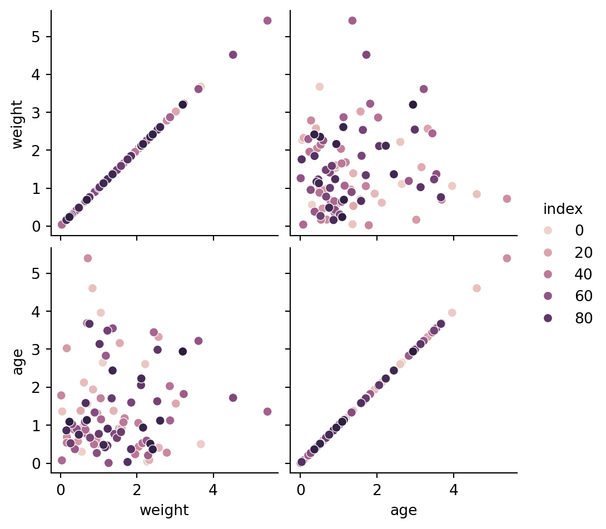
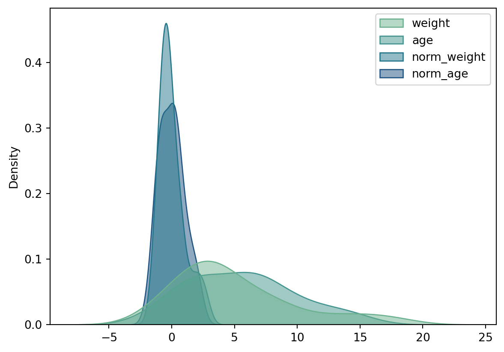
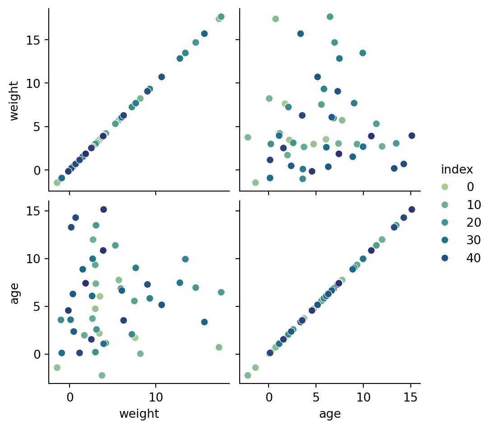
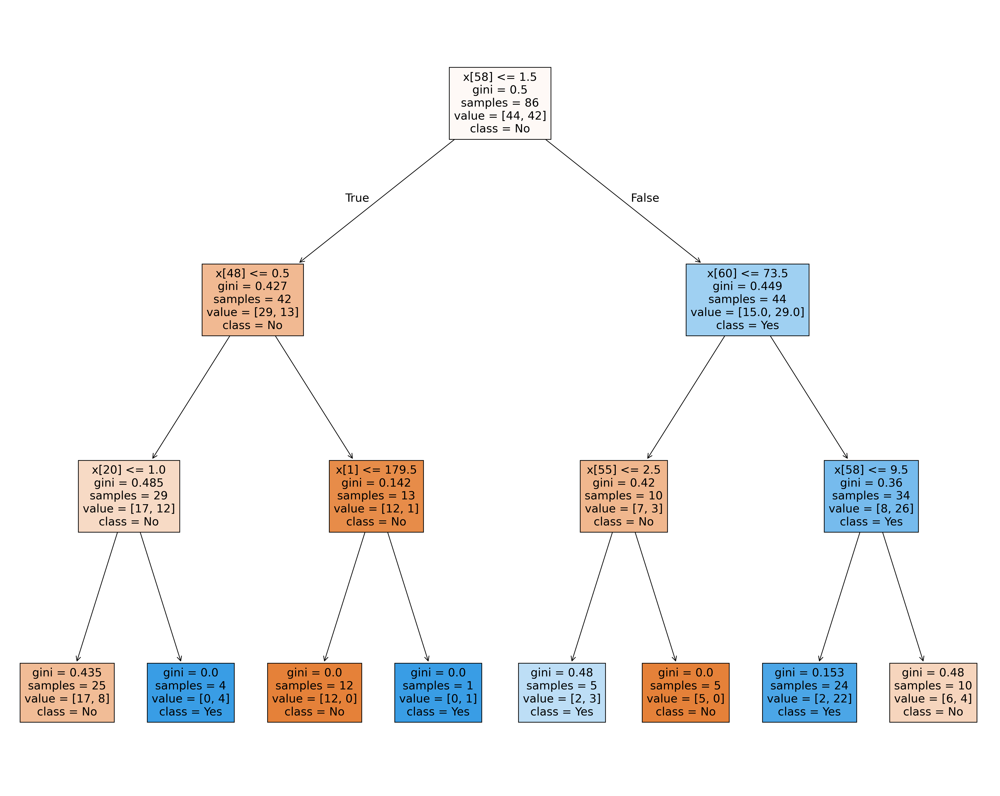
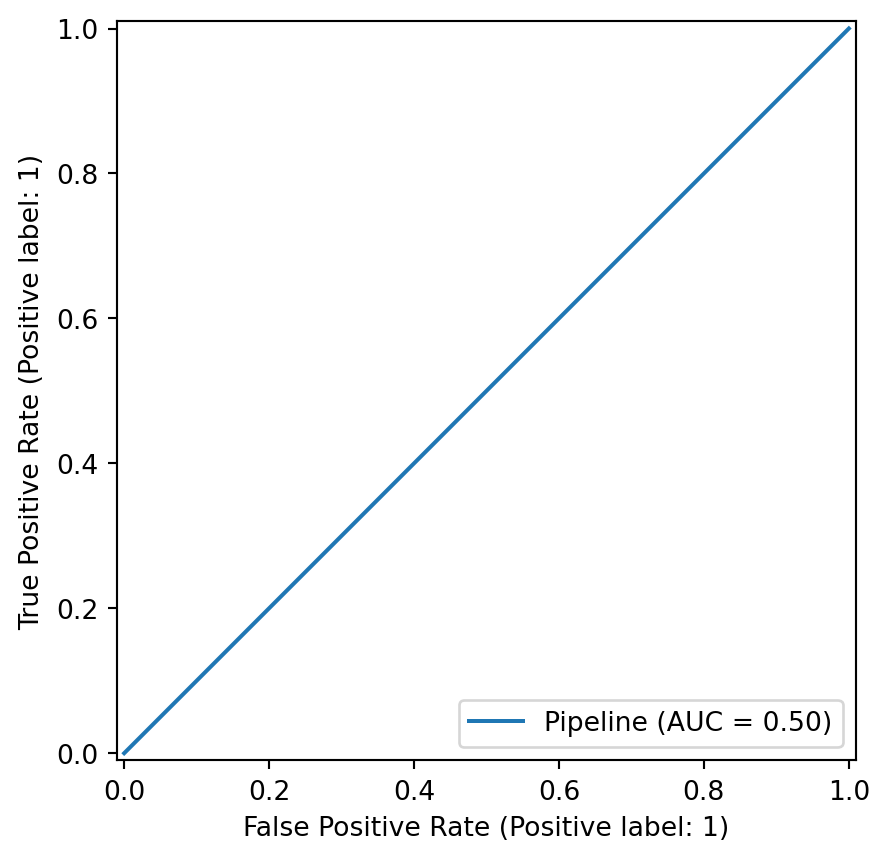
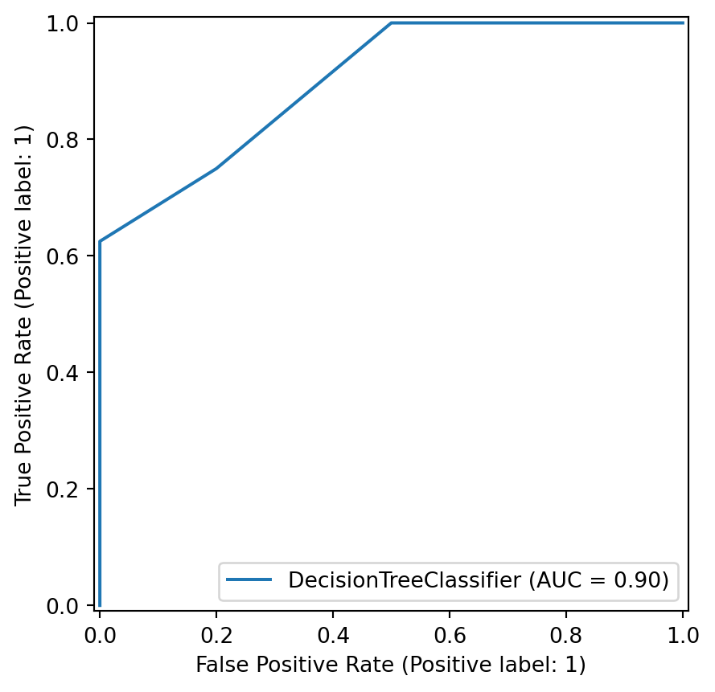

# usamos por convenção np para Numpy
# usamos por convenção pd para Pandas
import numpy as np
import pandas as pd5 Data Science (Intermediate)
Conteúdos
Conceitos de Data Science com Pandas e Scikit.
Manipulação de dataFrames para extrair, filtrar e transformar conjuntos de dados.
Introdução a aprendizagem supervisionada (Regressão e Classificação).
5.1 Exploração com Pandas
5.1.1 Series
data = pd.Series([0.25, 0.5, 0.75, 1.0])
data0 0.25
1 0.50
2 0.75
3 1.00
dtype: float64data.values
data.indexRangeIndex(start=0, stop=4, step=1)del data[2]data = pd.Series([0.25, 0.5, 0.75, 1.0],
index=['a', 'b', 'c', 'd'])
dataa 0.25
b 0.50
c 0.75
d 1.00
dtype: float64population_dict = {'Lisboa': 544325,'Sintra': 385989, 'Vila Nova de Gaia': 304233,
'Porto': 231834, 'Cascais': 214239, 'Loures': 201349,
'Braga': 193324, 'Almada': 177943}
population = pd.Series(population_dict)
populationLisboa 544325
Sintra 385989
Vila Nova de Gaia 304233
Porto 231834
Cascais 214239
Loures 201349
Braga 193324
Almada 177943
dtype: int64population['Braga']
population['Braga'] = 201000
population['Braga']2010005.1.2 DataFrames
area_dict = {'Lisboa': 100.1,'Sintra': 23.8, 'Vila Nova de Gaia': 56.3,
'Porto': 41.4, 'Cascais': 97.1, 'Loures': 11.8,
'Braga': 41, 'Almada': 14.7}
area = pd.Series(area_dict)
areaLisboa 100.1
Sintra 23.8
Vila Nova de Gaia 56.3
Porto 41.4
Cascais 97.1
Loures 11.8
Braga 41.0
Almada 14.7
dtype: float64criar uma fataframe a partir de series:
cities = pd.DataFrame({'population': population,
'area': area})
cities| population | area | |
|---|---|---|
| Lisboa | 544325 | 100.1 |
| Sintra | 385989 | 23.8 |
| Vila Nova de Gaia | 304233 | 56.3 |
| Porto | 231834 | 41.4 |
| Cascais | 214239 | 97.1 |
| Loures | 201349 | 11.8 |
| Braga | 201000 | 41.0 |
| Almada | 177943 | 14.7 |
# reset index com o nome cidade
cities.reset_index()
cities5.1.3 Index
indA = pd.Index([1, 3, 5, 7, 9])
indA
indB = pd.Index([2, 3, 5, 7, 11])
indA.intersection(indB)Index([3, 5, 7], dtype='int64')a intersecção é muito útil para descobrirmos registos com a mesma identificação em vários conjuntos
aerod_dict = {'Lisboa': 3, 'Porto': 4, 'Cascais': 1, 'Braga': 7, 'Viseu': 2}
aerod = pd.Series(aerod_dict)
aerod.index
aerod.index.intersection(cities.index)Index(['Lisboa', 'Porto', 'Cascais', 'Braga'], dtype='object')5.1.4 Reorganizar as DataFrames
Para juntar duas dataframes podemos usar os métodos: + Concatenate (pd.concat()) + Append (df.append): As of pandas 2.0, append (previously deprecated) was removed + Merge (pd.merge())
Por conveniência vamos definir uma função para criar dataframes
def make_df(cols, ind):
"""Quickly make a DataFrame"""
data = {c: [str(c) + str(i) for i in ind]
for c in cols}
return pd.DataFrame(data, ind)
# exemplo de DataFrame
make_df('ABC', range(3))| A | B | C | |
|---|---|---|---|
| 0 | A0 | B0 | C0 |
| 1 | A1 | B1 | C1 |
| 2 | A2 | B2 | C2 |
5.1.4.1 Método concatenate
df1 = make_df('AB', [1, 2])
df2 = make_df('AB', np.arange(3,5))
df1
df2| A | B | |
|---|---|---|
| 3 | A3 | B3 |
| 4 | A4 | B4 |
pd.concat([df1, df2])| A | B | |
|---|---|---|
| 1 | A1 | B1 |
| 2 | A2 | B2 |
| 3 | A3 | B3 |
| 4 | A4 | B4 |
df3 = make_df('AB', range(2))
df4 = make_df('CD', range(2))
df3
df4
pd.concat([df3, df4], axis='columns')| A | B | C | D | |
|---|---|---|---|---|
| 0 | A0 | B0 | C0 | D0 |
| 1 | A1 | B1 | C1 | D1 |
Duplicação de indexes
(Uma diferença importante entre np.concatenate e pd.concat é que a concatenação do Pandas preserva os índices, mesmo que o resultado tenha índices duplicados.)
x = make_df('AB', [0, 1])
y = make_df('AB', [2, 3])
y.index = x.index # fazer o match dos indices
x
y
pd.concat([x, y])| A | B | |
|---|---|---|
| 0 | A0 | B0 |
| 1 | A1 | B1 |
| 0 | A2 | B2 |
| 1 | A3 | B3 |
# Tratar índices repetidos como um erro, fazendo apenas a verificação
try:
pd.concat([x, y], verify_integrity=True)
except ValueError as e:
print("ValueError:", e)ValueError: Indexes have overlapping values: Index([0, 1], dtype='int64')# Ignorando o index das dataframes de origem, e refazendo na nova dataframe o index
x
y
pd.concat([x, y], ignore_index=True)| A | B | |
|---|---|---|
| 0 | A0 | B0 |
| 1 | A1 | B1 |
| 2 | A2 | B2 |
| 3 | A3 | B3 |
# Adicionando chaves MultiIndex para especificar um rótulo para as fontes de dados
x
y
pd.concat([x, y], keys=['x', 'y'])| A | B | ||
|---|---|---|---|
| x | 0 | A0 | B0 |
| 1 | A1 | B1 | |
| y | 0 | A2 | B2 |
| 1 | A3 | B3 |
teste = pd.concat([x, y], keys=['x', 'y'])
teste.reset_index()| level_0 | level_1 | A | B | |
|---|---|---|---|---|
| 0 | x | 0 | A0 | B0 |
| 1 | x | 1 | A1 | B1 |
| 2 | y | 0 | A2 | B2 |
| 3 | y | 1 | A3 | B3 |
Concatenação com joins
df5 = make_df('ABC', [1, 2])
df6 = make_df('BCD', [3, 4])
df5
df6
pd.concat([df5, df6])| A | B | C | D | |
|---|---|---|---|---|
| 1 | A1 | B1 | C1 | NaN |
| 2 | A2 | B2 | C2 | NaN |
| 3 | NaN | B3 | C3 | D3 |
| 4 | NaN | B4 | C4 | D4 |
para juntar fazendo a união das colunas de entrada usamos join=‘outer’, que é o valor por omissão
para juntar fazendo a interseção das colunas de entrada usamos join=‘inner’
pd.concat([df5, df6], join='inner')| B | C | |
|---|---|---|
| 1 | B1 | C1 |
| 2 | B2 | C2 |
| 3 | B3 | C3 |
| 4 | B4 | C4 |
se quisermos preservar todas as colunas de uma das dataframes devemos fazer reindex das colunas a preservar na outra dataframe axis=1
pd.concat([df6, df5.reindex(df6.columns, axis=1)])| B | C | D | |
|---|---|---|---|
| 3 | B3 | C3 | D3 |
| 4 | B4 | C4 | D4 |
| 1 | B1 | C1 | NaN |
| 2 | B2 | C2 | NaN |
5.1.4.2 Método merge
df1 = pd.DataFrame({'cidade': [ 'Braga','Lisboa','Sintra', 'Vila Nova de Gaia','Porto', 'Cascais',
'Loures', 'Almada'],
'populacao': [ 193324, 544325, 385989, 304233, 231834, 214239, 201349, 177943]})
df2 = pd.DataFrame({'cidade': ['Lisboa','Sintra', 'Vila Nova de Gaia',
'Porto', 'Cascais', 'Loures', 'Braga', 'Almada'],
'area': [ 100.1, 23.8, 56.3, 41.4, 97.1, 11.8, 41, 14.7],
'nuts3': [ '170', '170', '11A', '11A', '170', '170', '112', '170']})
df1
df2| cidade | area | nuts3 | |
|---|---|---|---|
| 0 | Lisboa | 100.1 | 170 |
| 1 | Sintra | 23.8 | 170 |
| 2 | Vila Nova de Gaia | 56.3 | 11A |
| 3 | Porto | 41.4 | 11A |
| 4 | Cascais | 97.1 | 170 |
| 5 | Loures | 11.8 | 170 |
| 6 | Braga | 41.0 | 112 |
| 7 | Almada | 14.7 | 170 |
one-to-one join
df3 = pd.merge(df1, df2)
df3| cidade | populacao | area | nuts3 | |
|---|---|---|---|---|
| 0 | Braga | 193324 | 41.0 | 112 |
| 1 | Lisboa | 544325 | 100.1 | 170 |
| 2 | Sintra | 385989 | 23.8 | 170 |
| 3 | Vila Nova de Gaia | 304233 | 56.3 | 11A |
| 4 | Porto | 231834 | 41.4 | 11A |
| 5 | Cascais | 214239 | 97.1 | 170 |
| 6 | Loures | 201349 | 11.8 | 170 |
| 7 | Almada | 177943 | 14.7 | 170 |
one-to-many join
df4 = pd.DataFrame({'nuts3': [ '112', '11A', '170'],
'nuts3_dsg': ['Cávado', 'Área Met. Porto', 'Área Met. Lisboa']})
df5 = pd.merge(df3, df4)
df4
df5| cidade | populacao | area | nuts3 | nuts3_dsg | |
|---|---|---|---|---|---|
| 0 | Braga | 193324 | 41.0 | 112 | Cávado |
| 1 | Lisboa | 544325 | 100.1 | 170 | Área Met. Lisboa |
| 2 | Sintra | 385989 | 23.8 | 170 | Área Met. Lisboa |
| 3 | Vila Nova de Gaia | 304233 | 56.3 | 11A | Área Met. Porto |
| 4 | Porto | 231834 | 41.4 | 11A | Área Met. Porto |
| 5 | Cascais | 214239 | 97.1 | 170 | Área Met. Lisboa |
| 6 | Loures | 201349 | 11.8 | 170 | Área Met. Lisboa |
| 7 | Almada | 177943 | 14.7 | 170 | Área Met. Lisboa |
many-to-many join
df6 = pd.DataFrame({'nuts3': [ '112', '112','11A', '170'],
'class': ['Urbano', 'Rural','Urbano', 'Urbano']})
df6
pd.merge(df5, df6)| cidade | populacao | area | nuts3 | nuts3_dsg | class | |
|---|---|---|---|---|---|---|
| 0 | Braga | 193324 | 41.0 | 112 | Cávado | Urbano |
| 1 | Braga | 193324 | 41.0 | 112 | Cávado | Rural |
| 2 | Lisboa | 544325 | 100.1 | 170 | Área Met. Lisboa | Urbano |
| 3 | Sintra | 385989 | 23.8 | 170 | Área Met. Lisboa | Urbano |
| 4 | Vila Nova de Gaia | 304233 | 56.3 | 11A | Área Met. Porto | Urbano |
| 5 | Porto | 231834 | 41.4 | 11A | Área Met. Porto | Urbano |
| 6 | Cascais | 214239 | 97.1 | 170 | Área Met. Lisboa | Urbano |
| 7 | Loures | 201349 | 11.8 | 170 | Área Met. Lisboa | Urbano |
| 8 | Almada | 177943 | 14.7 | 170 | Área Met. Lisboa | Urbano |
merge key
podemos indicar a chave para ligar, o primeiro exemplo é equivalente a display(‘df1’, ‘df2’, “pd.merge(df1, df2, on=‘cidade’)”)
mas nem sempre as colunas por onde queremos fazer o join têm o mesmo nome, nesse caso podemos usar o left_on e o right_on
df1a = pd.DataFrame({'cidade': ['Lisboa','Sintra', 'Vila Nova de Gaia','Porto', 'Cascais',
'Loures', 'Braga', 'Almada'],
'populacao': [544325, 385989, 304233, 231834, 214239, 201349, 193324, 177943]})
df2a = pd.DataFrame({'cidade+100khab': ['Lisboa','Sintra', 'Vila Nova de Gaia',
'Porto', 'Cascais', 'Loures', 'Braga', 'Almada'],
'area': [ 100.1, 23.8, 56.3, 41.4, 97.1, 11.8, 41, 14.7],
'nuts3': [ '170', '170', '11A', '11A', '170', '170', '112', '170']})
df1a
print()
df2a
print()
pd.merge(df1a, df2a, left_on="cidade", right_on="cidade+100khab")
| cidade | populacao | cidade+100khab | area | nuts3 | |
|---|---|---|---|---|---|
| 0 | Lisboa | 544325 | Lisboa | 100.1 | 170 |
| 1 | Sintra | 385989 | Sintra | 23.8 | 170 |
| 2 | Vila Nova de Gaia | 304233 | Vila Nova de Gaia | 56.3 | 11A |
| 3 | Porto | 231834 | Porto | 41.4 | 11A |
| 4 | Cascais | 214239 | Cascais | 97.1 | 170 |
| 5 | Loures | 201349 | Loures | 11.8 | 170 |
| 6 | Braga | 193324 | Braga | 41.0 | 112 |
| 7 | Almada | 177943 | Almada | 14.7 | 170 |
podemos fazer drop da coluna repetida
pd.merge(df1a, df2a, left_on="cidade", right_on="cidade+100khab").drop('cidade+100khab', axis=1)| cidade | populacao | area | nuts3 | |
|---|---|---|---|---|
| 0 | Lisboa | 544325 | 100.1 | 170 |
| 1 | Sintra | 385989 | 23.8 | 170 |
| 2 | Vila Nova de Gaia | 304233 | 56.3 | 11A |
| 3 | Porto | 231834 | 41.4 | 11A |
| 4 | Cascais | 214239 | 97.1 | 170 |
| 5 | Loures | 201349 | 11.8 | 170 |
| 6 | Braga | 193324 | 41.0 | 112 |
| 7 | Almada | 177943 | 14.7 | 170 |
Left_index e Right_index Keywords
df1i = df1.set_index('cidade')
df2i = df2.set_index('cidade')
df1i
df2i| area | nuts3 | |
|---|---|---|
| cidade | ||
| Lisboa | 100.1 | 170 |
| Sintra | 23.8 | 170 |
| Vila Nova de Gaia | 56.3 | 11A |
| Porto | 41.4 | 11A |
| Cascais | 97.1 | 170 |
| Loures | 11.8 | 170 |
| Braga | 41.0 | 112 |
| Almada | 14.7 | 170 |
pd.merge(df1i, df2i, left_index=True, right_index=True)| populacao | area | nuts3 | |
|---|---|---|---|
| cidade | |||
| Braga | 193324 | 41.0 | 112 |
| Lisboa | 544325 | 100.1 | 170 |
| Sintra | 385989 | 23.8 | 170 |
| Vila Nova de Gaia | 304233 | 56.3 | 11A |
| Porto | 231834 | 41.4 | 11A |
| Cascais | 214239 | 97.1 | 170 |
| Loures | 201349 | 11.8 | 170 |
| Almada | 177943 | 14.7 | 170 |
quando temos os indices dos dois lados podemos usar apenas o join
# método antigo
df1i.join(df2i)| populacao | area | nuts3 | |
|---|---|---|---|
| cidade | |||
| Braga | 193324 | 41.0 | 112 |
| Lisboa | 544325 | 100.1 | 170 |
| Sintra | 385989 | 23.8 | 170 |
| Vila Nova de Gaia | 304233 | 56.3 | 11A |
| Porto | 231834 | 41.4 | 11A |
| Cascais | 214239 | 97.1 | 170 |
| Loures | 201349 | 11.8 | 170 |
| Almada | 177943 | 14.7 | 170 |
as keywords left_index e right_index são mais úteis quando pretendemos misturar index e colunas
pd.merge(df1i, df2a, left_index=True, right_on='cidade+100khab')| populacao | cidade+100khab | area | nuts3 | |
|---|---|---|---|---|
| 6 | 193324 | Braga | 41.0 | 112 |
| 0 | 544325 | Lisboa | 100.1 | 170 |
| 1 | 385989 | Sintra | 23.8 | 170 |
| 2 | 304233 | Vila Nova de Gaia | 56.3 | 11A |
| 3 | 231834 | Porto | 41.4 | 11A |
| 4 | 214239 | Cascais | 97.1 | 170 |
| 5 | 201349 | Loures | 11.8 | 170 |
| 7 | 177943 | Almada | 14.7 | 170 |
# para fazer reset de um index
df1i
df1i.reset_index()| cidade | populacao | |
|---|---|---|
| 0 | Braga | 193324 |
| 1 | Lisboa | 544325 |
| 2 | Sintra | 385989 |
| 3 | Vila Nova de Gaia | 304233 |
| 4 | Porto | 231834 |
| 5 | Cascais | 214239 |
| 6 | Loures | 201349 |
| 7 | Almada | 177943 |
# posso continuar a fazer reset do index
# isso irá acrescentando colunas
df1i.reset_index(inplace = True) # o 'inplace = True' altera o dataframe original
df1i
df1i.reset_index()| index | cidade | populacao | |
|---|---|---|---|
| 0 | 0 | Braga | 193324 |
| 1 | 1 | Lisboa | 544325 |
| 2 | 2 | Sintra | 385989 |
| 3 | 3 | Vila Nova de Gaia | 304233 |
| 4 | 4 | Porto | 231834 |
| 5 | 5 | Cascais | 214239 |
| 6 | 6 | Loures | 201349 |
| 7 | 7 | Almada | 177943 |
Inner e Outer Joins
df11 = pd.DataFrame({'cidade': ['Lisboa','Sintra'],
'populacao': [544325, 385989]})
df12 = pd.DataFrame({'cidade': ['Lisboa','Porto', ],
'area': [ 100.1, 97.1]})
df11
print()
df12
print()
pd.merge(df11, df12)
| cidade | populacao | area | |
|---|---|---|---|
| 0 | Lisboa | 544325 | 100.1 |
por omissão é realizado o inner join mas podemos especificar o tipo de join
pd.merge(df11, df12, how='outer')
print() # paenas para acrescentr uma linha vazia
pd.merge(df11, df12, how='left')| cidade | populacao | area | |
|---|---|---|---|
| 0 | Lisboa | 544325 | 100.1 |
| 1 | Sintra | 385989 | NaN |
Sobreposição de Nomes de Colunas
df13 = pd.DataFrame({'cidade': ['Lisboa','Porto'],
'area': [ 100, 97.5]})
df12
df13
print()
pd.merge(df12, df13, on='cidade')| cidade | area_x | area_y | |
|---|---|---|---|
| 0 | Lisboa | 100.1 | 100.0 |
| 1 | Porto | 97.1 | 97.5 |
podemos indicar os sufixos que prentedemos para conhecermos a origem
pd.merge(df12, df13, on="cidade", suffixes=["_12", "_13"])| cidade | area_12 | area_13 | |
|---|---|---|---|
| 0 | Lisboa | 100.1 | 100.0 |
| 1 | Porto | 97.1 | 97.5 |
5.1.4.3 Agregar e Agrupar
df5
df5.describe()| populacao | area | |
|---|---|---|
| count | 8.000000 | 8.000000 |
| mean | 281654.500000 | 48.275000 |
| std | 126731.169791 | 34.415601 |
| min | 177943.000000 | 11.800000 |
| 25% | 199342.750000 | 21.525000 |
| 50% | 223036.500000 | 41.200000 |
| 75% | 324672.000000 | 66.500000 |
| max | 544325.000000 | 100.100000 |
print(df5['populacao'].sum(), df5['populacao'].mean())2253236 281654.5valores agrupados
df5.groupby('nuts3').populacao.mean()
# ou de forma equivalente
df5.groupby('nuts3')['populacao'].mean()nuts3
112 193324.0
11A 268033.5
170 304769.0
Name: populacao, dtype: float64o object groupby suporta iteração sobre os grupos, isto pode ser útil para inspeccionarmos manualmente os grupos
# inspecao da estrutura
for (group_name, group_data) in df5.groupby('nuts3'):
print("{0} shape={1}".format(group_name, group_data.shape))112 shape=(1, 5)
11A shape=(2, 5)
170 shape=(5, 5)# summary statistics por grupo
for group_name, group_data in df5.groupby('nuts3'):
print("Nuts3:", group_name)
print("Mean value:", group_data['populacao'].mean())
print("Median value:", group_data['populacao'].median())
print("Standard deviation:", group_data['populacao'].std())
print()Nuts3: 112
Mean value: 193324.0
Median value: 193324.0
Standard deviation: nan
Nuts3: 11A
Mean value: 268033.5
Median value: 268033.5
Standard deviation: 51193.82385112486
Nuts3: 170
Mean value: 304769.0
Median value: 214239.0
Standard deviation: 157289.52373886824
# inspeccionar valores unicos
for group_name, group_data in df5.groupby('nuts3'):
print("Category:", group_name)
print("Unique values:", group_data['cidade'].count())
print("Unique values:", group_data['cidade'].nunique())
print("Unique values:", group_data['cidade'].unique())
print()Category: 112
Unique values: 1
Unique values: 1
Unique values: ['Braga']
Category: 11A
Unique values: 2
Unique values: 2
Unique values: ['Vila Nova de Gaia' 'Porto']
Category: 170
Unique values: 5
Unique values: 5
Unique values: ['Lisboa' 'Sintra' 'Cascais' 'Loures' 'Almada']
# inspeccionar os tops
N = 1
for group_name, group_data in df5.groupby('nuts3'):
print("Category:", group_name)
print(group_data.nlargest(N, 'area'))
print()Category: 112
cidade populacao area nuts3 nuts3_dsg
0 Braga 193324 41.0 112 Cávado
Category: 11A
cidade populacao area nuts3 nuts3_dsg
3 Vila Nova de Gaia 304233 56.3 11A Área Met. Porto
Category: 170
cidade populacao area nuts3 nuts3_dsg
1 Lisboa 544325 100.1 170 Área Met. Lisboa
# inspecao visual
for group_name, group_data in df5.groupby('nuts3'):
print("Category:", group_name)
print(group_data.head())
print()Category: 112
cidade populacao area nuts3 nuts3_dsg
0 Braga 193324 41.0 112 Cávado
Category: 11A
cidade populacao area nuts3 nuts3_dsg
3 Vila Nova de Gaia 304233 56.3 11A Área Met. Porto
4 Porto 231834 41.4 11A Área Met. Porto
Category: 170
cidade populacao area nuts3 nuts3_dsg
1 Lisboa 544325 100.1 170 Área Met. Lisboa
2 Sintra 385989 23.8 170 Área Met. Lisboa
5 Cascais 214239 97.1 170 Área Met. Lisboa
6 Loures 201349 11.8 170 Área Met. Lisboa
7 Almada 177943 14.7 170 Área Met. Lisboa
# filtrar grupos
for group_name, group_data in df5.groupby('nuts3'):
if group_data['area'].max() > 100:
print("Categorias com area > 100:", group_name)Categorias com area > 100: 170# Criar visualizacoes por grupo
import matplotlib.pyplot as plt
df5.set_index('cidade', inplace = True )
for group_name, group_data in df5.groupby('nuts3'):
group_data['populacao'].plot(kind='bar', title=group_name)
plt.show()# para aplicar funcao dentro do grupo
# Function to calculate percentage change within each group
def calculate_relative_percentage(group,col_name):
total_sum = group[col_name].sum()
group['relative_percentage'] = (group[col_name] / total_sum) * 100
return group
# Apply the custom analysis to each group
result_df = pd.DataFrame()
for name, group in df5.groupby('nuts3'):
group = calculate_relative_percentage(group, 'populacao')
result_df = pd.concat([result_df, group])
result_df| populacao | area | nuts3 | nuts3_dsg | relative_percentage | |
|---|---|---|---|---|---|
| cidade | |||||
| Braga | 193324 | 41.0 | 112 | Cávado | 100.000000 |
| Vila Nova de Gaia | 304233 | 56.3 | 11A | Área Met. Porto | 56.752794 |
| Porto | 231834 | 41.4 | 11A | Área Met. Porto | 43.247206 |
| Lisboa | 544325 | 100.1 | 170 | Área Met. Lisboa | 35.720497 |
| Sintra | 385989 | 23.8 | 170 | Área Met. Lisboa | 25.329938 |
| Cascais | 214239 | 97.1 | 170 | Área Met. Lisboa | 14.059107 |
| Loures | 201349 | 11.8 | 170 | Área Met. Lisboa | 13.213221 |
| Almada | 177943 | 14.7 | 170 | Área Met. Lisboa | 11.677238 |
df5.groupby('nuts3')['populacao'].describe()| count | mean | std | min | 25% | 50% | 75% | max | |
|---|---|---|---|---|---|---|---|---|
| nuts3 | ||||||||
| 112 | 1.0 | 193324.0 | NaN | 193324.0 | 193324.00 | 193324.0 | 193324.00 | 193324.0 |
| 11A | 2.0 | 268033.5 | 51193.823851 | 231834.0 | 249933.75 | 268033.5 | 286133.25 | 304233.0 |
| 170 | 5.0 | 304769.0 | 157289.523739 | 177943.0 | 201349.00 | 214239.0 | 385989.00 | 544325.0 |
Funções de Agregação
varias funções de agregação podem ser aplicadas em simultâneo
df5.groupby('nuts3')['populacao'].aggregate(["min", "median", "mean", "max"])| min | median | mean | max | |
|---|---|---|---|---|
| nuts3 | ||||
| 112 | 193324 | 193324.0 | 193324.0 | 193324 |
| 11A | 231834 | 268033.5 | 268033.5 | 304233 |
| 170 | 177943 | 214239.0 | 304769.0 | 544325 |
Utilização de filtros
def filter_func(x):
"""Defino a função de filtro"""
return x['populacao'].std() > 100000
# a função de filtro é aplicado ao grupo
df5.groupby('nuts3').filter(filter_func)| populacao | area | nuts3 | nuts3_dsg | |
|---|---|---|---|---|
| cidade | ||||
| Lisboa | 544325 | 100.1 | 170 | Área Met. Lisboa |
| Sintra | 385989 | 23.8 | 170 | Área Met. Lisboa |
| Cascais | 214239 | 97.1 | 170 | Área Met. Lisboa |
| Loures | 201349 | 11.8 | 170 | Área Met. Lisboa |
| Almada | 177943 | 14.7 | 170 | Área Met. Lisboa |
df5.groupby('nuts3')['populacao'].std()nuts3
112 NaN
11A 51193.823851
170 157289.523739
Name: populacao, dtype: float64Também é comum passar as colunas de mapeamento dum dicionário para operações a serem aplicadas nessa coluna
df5.groupby('nuts3').aggregate({'populacao': 'min', 'area': 'max'})| populacao | area | |
|---|---|---|
| nuts3 | ||
| 112 | 193324 | 41.0 |
| 11A | 231834 | 56.3 |
| 170 | 177943 | 100.1 |
Método Transform (conserva o nr de linhas original)
Na transformação, a saída tem o mesmo formato da entrada
def center(x):
return x - x.mean()
df5
print()
df5.groupby('nuts3')['populacao'].transform(center)cidade
Braga 0.0
Lisboa 239556.0
Sintra 81220.0
Vila Nova de Gaia 36199.5
Porto -36199.5
Cascais -90530.0
Loures -103420.0
Almada -126826.0
Name: populacao, dtype: float64Método Apply
def norm_by_area(x):
# x is a DataFrame of group values
x['populacao'] /= x['area'].sum()
return x
df5.groupby('nuts3').apply(norm_by_area)C:\Users\bruno.lima\AppData\Local\Temp\ipykernel_12592\2164890277.py:6: DeprecationWarning: DataFrameGroupBy.apply operated on the grouping columns. This behavior is deprecated, and in a future version of pandas the grouping columns will be excluded from the operation. Either pass `include_groups=False` to exclude the groupings or explicitly select the grouping columns after groupby to silence this warning.
df5.groupby('nuts3').apply(norm_by_area)| populacao | area | nuts3 | nuts3_dsg | ||
|---|---|---|---|---|---|
| nuts3 | cidade | ||||
| 112 | Braga | 4715.219512 | 41.0 | 112 | Cávado |
| 11A | Vila Nova de Gaia | 3113.950870 | 56.3 | 11A | Área Met. Porto |
| Porto | 2372.917093 | 41.4 | 11A | Área Met. Porto | |
| 170 | Lisboa | 2199.292929 | 100.1 | 170 | Área Met. Lisboa |
| Sintra | 1559.551515 | 23.8 | 170 | Área Met. Lisboa | |
| Cascais | 865.612121 | 97.1 | 170 | Área Met. Lisboa | |
| Loures | 813.531313 | 11.8 | 170 | Área Met. Lisboa | |
| Almada | 718.961616 | 14.7 | 170 | Área Met. Lisboa |
# com o group by por nuts3 somam-se as áreas da nuts3
# por exemplo na 11A será 56.3 + 41.4 = 97.7
# como pop VNGaia = 304233 Porto = 231834
print("Pop normalizada por nuts3 de {0} é {1}". format("VNGaia", 304233/97.7))
print("Pop normalizada por nuts3 de {0} é {1}". format("Porto", 231834/97.7))Pop normalizada por nuts3 de VNGaia é 3113.950870010235
Pop normalizada por nuts3 de Porto é 2372.9170931422723df5.groupby('cidade').apply(norm_by_area)| populacao | area | nuts3 | nuts3_dsg | ||
|---|---|---|---|---|---|
| cidade | cidade | ||||
| Almada | Almada | 12104.965986 | 14.7 | 170 | Área Met. Lisboa |
| Braga | Braga | 4715.219512 | 41.0 | 112 | Cávado |
| Cascais | Cascais | 2206.374871 | 97.1 | 170 | Área Met. Lisboa |
| Lisboa | Lisboa | 5437.812188 | 100.1 | 170 | Área Met. Lisboa |
| Loures | Loures | 17063.474576 | 11.8 | 170 | Área Met. Lisboa |
| Porto | Porto | 5599.855072 | 41.4 | 11A | Área Met. Porto |
| Sintra | Sintra | 16218.025210 | 23.8 | 170 | Área Met. Lisboa |
| Vila Nova de Gaia | Vila Nova de Gaia | 5403.783304 | 56.3 | 11A | Área Met. Porto |
# com o group by por cidade não há lugar a somas...
# as áreas são VNGaia = 56.3 Porto = 41.4
# como pop VNGaia = 304233 Porto = 231834
print("Pop normalizada por cidade de{0} é {1}". format("VNGaia", 304233/56.3))
print("Pop normalizada por cidade de{0} é {1}". format("Porto", 231834/41.4))Pop normalizada por cidade deVNGaia é 5403.783303730018
Pop normalizada por cidade dePorto é 5599.855072463768Diferenças entre Apply e Transform
- transform() pode receber uma função, uma função de string, uma lista de funções e um dicionário. No entanto, apply() só é pode receber uma função.
- transform() não pode produzir resultados agregados
- apply() funciona com várias séries (várias colunas) ao mesmo tempo. No entanto, transform() só pode funcionar com uma série de cada vez.
# Função de string
df5['populacao'].transform('sqrt')
# lista de funções
df5['area'].transform([np.sqrt, np.exp])
# Dicionário
df5.transform({
'populacao': np.sqrt,
'area': np.exp,
})| populacao | area | |
|---|---|---|
| cidade | ||
| Braga | 439.686252 | 6.398435e+17 |
| Lisboa | 737.783844 | 2.970829e+43 |
| Sintra | 621.280130 | 2.168746e+10 |
| Vila Nova de Gaia | 551.573205 | 2.823445e+24 |
| Porto | 481.491433 | 9.545343e+17 |
| Cascais | 462.859590 | 1.479089e+42 |
| Loures | 448.719289 | 1.332524e+05 |
| Almada | 421.832905 | 2.421748e+06 |
# Apply consegue produzir agregados
df5.apply(lambda x:x.sum())populacao 2253236
area 386.2
nuts3 11217017011A11A170170170
nuts3_dsg CávadoÁrea Met. LisboaÁrea Met. LisboaÁrea Met...
dtype: object## mas não funciona com o transform
df5.transform(lambda x:x.sum())def subtract_two(x):
return x['populacao'] - x['area']
# apply funciona com várias séries em simultâneo
df5.apply(subtract_two, axis=1)cidade
Braga 193283.0
Lisboa 544224.9
Sintra 385965.2
Vila Nova de Gaia 304176.7
Porto 231792.6
Cascais 214141.9
Loures 201337.2
Almada 177928.3
dtype: float64# mas o transform não
df5.transform(subtract_two, axis=1)Especificar as Split Keys para os grupos
Podemos fazer grupos com uma lista, série ou index a especificar as keys pelas quais se faz o agrupamento. A key pode ser uma série ou lista com o comprimento da DataFrame.
L = [0, 1, 0, 1, 2, 0, 3, 1]
df5.groupby(L).sum()| populacao | area | nuts3 | nuts3_dsg | |
|---|---|---|---|---|
| 0 | 793552 | 161.9 | 112170170 | CávadoÁrea Met. LisboaÁrea Met. Lisboa |
| 1 | 1026501 | 171.1 | 17011A170 | Área Met. LisboaÁrea Met. PortoÁrea Met. Lisboa |
| 2 | 231834 | 41.4 | 11A | Área Met. Porto |
| 3 | 201349 | 11.8 | 170 | Área Met. Lisboa |
# forma mais verbosa equivalente ao que temos usado até agora
# aqui explictamos que a key é df5['nuts3'] e não apenas 'nuts3'
df5.groupby(df5['nuts3']).sum()| populacao | area | nuts3_dsg | |
|---|---|---|---|
| nuts3 | |||
| 112 | 193324 | 41.0 | Cávado |
| 11A | 536067 | 97.7 | Área Met. PortoÁrea Met. Porto |
| 170 | 1523845 | 247.5 | Área Met. LisboaÁrea Met. LisboaÁrea Met. Lisb... |
# com um dicionário
df2g = df5.set_index('nuts3')
mapping = {'11A': 'norte', '112': 'norte', '170': 'centro'}
df2g
print()
df2g.groupby(mapping).sum()| populacao | area | nuts3_dsg | |
|---|---|---|---|
| nuts3 | |||
| centro | 1523845 | 247.5 | Área Met. LisboaÁrea Met. LisboaÁrea Met. Lisb... |
| norte | 729391 | 138.7 | CávadoÁrea Met. PortoÁrea Met. Porto |
5.1.4.4 Pivot Tables
import seaborn as sns # importamos esta package para termos acesso a um dataset
titanic = sns.load_dataset('titanic')
titanic.head()
print()
titanic.describe()| survived | pclass | age | sibsp | parch | fare | |
|---|---|---|---|---|---|---|
| count | 891.000000 | 891.000000 | 714.000000 | 891.000000 | 891.000000 | 891.000000 |
| mean | 0.383838 | 2.308642 | 29.699118 | 0.523008 | 0.381594 | 32.204208 |
| std | 0.486592 | 0.836071 | 14.526497 | 1.102743 | 0.806057 | 49.693429 |
| min | 0.000000 | 1.000000 | 0.420000 | 0.000000 | 0.000000 | 0.000000 |
| 25% | 0.000000 | 2.000000 | 20.125000 | 0.000000 | 0.000000 | 7.910400 |
| 50% | 0.000000 | 3.000000 | 28.000000 | 0.000000 | 0.000000 | 14.454200 |
| 75% | 1.000000 | 3.000000 | 38.000000 | 1.000000 | 0.000000 | 31.000000 |
| max | 1.000000 | 3.000000 | 80.000000 | 8.000000 | 6.000000 | 512.329200 |
Preparar manualmente a Pivot Table
titanic.groupby('sex')[['survived']].mean()
print()
titanic.groupby(['sex', 'class'], observed=True)['survived'].mean().unstack() # unstack para ter a pivot table| class | First | Second | Third |
|---|---|---|---|
| sex | |||
| female | 0.968085 | 0.921053 | 0.500000 |
| male | 0.368852 | 0.157407 | 0.135447 |
print()
titanic.pivot_table(index='sex', columns='class',
values='survived', aggfunc='mean', observed=True)| class | First | Second | Third |
|---|---|---|---|
| sex | |||
| female | 0.968085 | 0.921053 | 0.500000 |
| male | 0.368852 | 0.157407 | 0.135447 |
Syntax Pivot Table
titanic.pivot_table('survived', index='sex', columns='class', aggfunc='mean')
print()
age_group = pd.cut(titanic['age'], [0, 18, 80])
age_group
print()
# multilevel pivot table
titanic.pivot_table('survived', index=['sex', age_group],
columns='class', aggfunc='mean')
C:\Users\bruno.lima\AppData\Local\Temp\ipykernel_12592\4189409504.py:1: FutureWarning: The default value of observed=False is deprecated and will change to observed=True in a future version of pandas. Specify observed=False to silence this warning and retain the current behavior
titanic.pivot_table('survived', index='sex', columns='class', aggfunc='mean')
C:\Users\bruno.lima\AppData\Local\Temp\ipykernel_12592\4189409504.py:7: FutureWarning: The default value of observed=False is deprecated and will change to observed=True in a future version of pandas. Specify observed=False to silence this warning and retain the current behavior
titanic.pivot_table('survived', index=['sex', age_group],| class | First | Second | Third | |
|---|---|---|---|---|
| sex | age | |||
| female | (0, 18] | 0.909091 | 1.000000 | 0.511628 |
| (18, 80] | 0.972973 | 0.900000 | 0.423729 | |
| male | (0, 18] | 0.800000 | 0.600000 | 0.215686 |
| (18, 80] | 0.375000 | 0.071429 | 0.133663 |
Summary Statistics na DataFrame
titanic.describe()| survived | pclass | age | sibsp | parch | fare | |
|---|---|---|---|---|---|---|
| count | 891.000000 | 891.000000 | 714.000000 | 891.000000 | 891.000000 | 891.000000 |
| mean | 0.383838 | 2.308642 | 29.699118 | 0.523008 | 0.381594 | 32.204208 |
| std | 0.486592 | 0.836071 | 14.526497 | 1.102743 | 0.806057 | 49.693429 |
| min | 0.000000 | 1.000000 | 0.420000 | 0.000000 | 0.000000 | 0.000000 |
| 25% | 0.000000 | 2.000000 | 20.125000 | 0.000000 | 0.000000 | 7.910400 |
| 50% | 0.000000 | 3.000000 | 28.000000 | 0.000000 | 0.000000 | 14.454200 |
| 75% | 1.000000 | 3.000000 | 38.000000 | 1.000000 | 0.000000 | 31.000000 |
| max | 1.000000 | 3.000000 | 80.000000 | 8.000000 | 6.000000 | 512.329200 |
todas estas funções estão disponíveis como fomos vendo nos exemplos anteriores
titanic.pivot_table('fare', index=['sex'],
columns='class', aggfunc='mean')
print()
titanic.pivot_table('survived', index=['class'], aggfunc='count')C:\Users\bruno.lima\AppData\Local\Temp\ipykernel_12592\4083826376.py:1: FutureWarning: The default value of observed=False is deprecated and will change to observed=True in a future version of pandas. Specify observed=False to silence this warning and retain the current behavior
titanic.pivot_table('fare', index=['sex'],
C:\Users\bruno.lima\AppData\Local\Temp\ipykernel_12592\4083826376.py:6: FutureWarning: The default value of observed=False is deprecated and will change to observed=True in a future version of pandas. Specify observed=False to silence this warning and retain the current behavior
titanic.pivot_table('survived', index=['class'], aggfunc='count')| survived | |
|---|---|
| class | |
| First | 216 |
| Second | 184 |
| Third | 491 |
5.2 Estatisticas Oficiais
import numpy as np
import pandas as pd
datadir ="data\\"
filename = "PT_2012_Hosp.csv"ler os dados:
df_hosp = pd.read_csv(f"{datadir}{filename}", index_col=0, verbose = False, encoding='latin-1')
df_hosp.head()
print()
df_hosp.describe()
df_hosp = df_hosp.reset_index() # passar o index para uma coluna; podia ser feito com inplace = True
print()
df_hosp.head()C:\Users\bruno.lima\AppData\Local\Temp\ipykernel_12592\281557973.py:1: FutureWarning: The 'verbose' keyword in pd.read_csv is deprecated and will be removed in a future version.
df_hosp = pd.read_csv(f"{datadir}{filename}", index_col=0, verbose = False, encoding='latin-1')| ANO | NORDEM | NUTS2 | DTCC_COD | CC_DSG | C10001 | C20001 | C21001 | C21011 | C21021 | ... | C30001 | C31001 | C31011 | C31021 | C31031 | C31041 | C31051 | C31061 | C31071 | C32001 | |
|---|---|---|---|---|---|---|---|---|---|---|---|---|---|---|---|---|---|---|---|---|---|
| 0 | 2012 | 229 | 17 | 1504 | Barreiro | 1458.0 | 247.0 | 159.0 | 2.0 | 11.0 | ... | 493.0 | 39.0 | 8.0 | 19.0 | 2.0 | 2.0 | 3.0 | 5.0 | 0.0 | 454.0 |
| 1 | 2012 | 206 | 17 | 1507 | Montijo | 144.0 | 0.0 | 0.0 | 0.0 | 0.0 | ... | 46.0 | 0.0 | 0.0 | 0.0 | 0.0 | 0.0 | 0.0 | 0.0 | 0.0 | 46.0 |
| 2 | 2012 | 65 | 16 | 502 | Castelo Branco | 894.0 | 111.0 | 89.0 | 0.0 | 8.0 | ... | 337.0 | 0.0 | 0.0 | 0.0 | 0.0 | 0.0 | 0.0 | 0.0 | 0.0 | 337.0 |
| 3 | 2012 | 106 | 17 | 1114 | Vila Franca de Xira | 801.0 | 166.0 | 108.0 | 0.0 | 12.0 | ... | 264.0 | 36.0 | 4.0 | 16.0 | 5.0 | 2.0 | 2.0 | 7.0 | 0.0 | 228.0 |
| 4 | 2012 | 209 | 11 | 1315 | Valongo | 221.0 | 13.0 | 13.0 | 0.0 | 0.0 | ... | 88.0 | 8.0 | 0.0 | 0.0 | 1.0 | 0.0 | 1.0 | 6.0 | 0.0 | 80.0 |
5 rows × 64 columns
5.2.1 Pre-processamento
5.2.1.1 Exclusão de colunas:
# exclusão da coluna nordem
df_hosp = df_hosp.drop(columns=['NORDEM'])
df_hosp.head()| ANO | NUTS2 | DTCC_COD | CC_DSG | C10001 | C20001 | C21001 | C21011 | C21021 | C21031 | ... | C30001 | C31001 | C31011 | C31021 | C31031 | C31041 | C31051 | C31061 | C31071 | C32001 | |
|---|---|---|---|---|---|---|---|---|---|---|---|---|---|---|---|---|---|---|---|---|---|
| 0 | 2012 | 17 | 1504 | Barreiro | 1458.0 | 247.0 | 159.0 | 2.0 | 11.0 | 0.0 | ... | 493.0 | 39.0 | 8.0 | 19.0 | 2.0 | 2.0 | 3.0 | 5.0 | 0.0 | 454.0 |
| 1 | 2012 | 17 | 1507 | Montijo | 144.0 | 0.0 | 0.0 | 0.0 | 0.0 | 0.0 | ... | 46.0 | 0.0 | 0.0 | 0.0 | 0.0 | 0.0 | 0.0 | 0.0 | 0.0 | 46.0 |
| 2 | 2012 | 16 | 502 | Castelo Branco | 894.0 | 111.0 | 89.0 | 0.0 | 8.0 | 0.0 | ... | 337.0 | 0.0 | 0.0 | 0.0 | 0.0 | 0.0 | 0.0 | 0.0 | 0.0 | 337.0 |
| 3 | 2012 | 17 | 1114 | Vila Franca de Xira | 801.0 | 166.0 | 108.0 | 0.0 | 12.0 | 0.0 | ... | 264.0 | 36.0 | 4.0 | 16.0 | 5.0 | 2.0 | 2.0 | 7.0 | 0.0 | 228.0 |
| 4 | 2012 | 11 | 1315 | Valongo | 221.0 | 13.0 | 13.0 | 0.0 | 0.0 | 0.0 | ... | 88.0 | 8.0 | 0.0 | 0.0 | 1.0 | 0.0 | 1.0 | 6.0 | 0.0 | 80.0 |
5 rows × 63 columns
5.2.1.2 Variáveis com demasiadas categorias:
df_hosp['NUTS2'].value_counts().sort_values()
print()
df_hosp['DTCC_COD'].value_counts()
print()
df_hosp['DTCC_COD'].value_counts(normalize=True) # resultados percentuais
DTCC_COD
1106 0.158416
603 0.099010
1312 0.069307
602 0.019802
1110 0.019802
...
1503 0.009901
1419 0.009901
1401 0.009901
1418 0.009901
1408 0.009901
Name: proportion, Length: 63, dtype: float64Agregar todos os municipios com menos de dez por cento das ocorrências na amostra:
# verifica contagens para a coluna DTCC_COD
df_hosp['DTCC_COD_COUNT']= df_hosp.DTCC_COD.map(df_hosp.DTCC_COD.value_counts(normalize=True)) # Constroi a nova coluna
# Correr sem criar a coluna primeiro
df_hosp.loc[df_hosp['DTCC_COD_COUNT'] < 0.1, 'DTCC_COD_NEW'] = 'outro' # Constroi a nova coluna
df_hosp.loc[df_hosp['DTCC_COD_COUNT'] >= 0.1, 'DTCC_COD_NEW'] = df_hosp['CC_DSG'] # atualiza os valores em falta
print()
df_hosp.loc[:,['DTCC_COD_NEW','DTCC_COD', 'CC_DSG']] # todas as linhas e as colunas selecionadas| DTCC_COD_NEW | DTCC_COD | CC_DSG | |
|---|---|---|---|
| 0 | outro | 1504 | Barreiro |
| 1 | outro | 1507 | Montijo |
| 2 | outro | 502 | Castelo Branco |
| 3 | outro | 1114 | Vila Franca de Xira |
| 4 | outro | 1315 | Valongo |
| ... | ... | ... | ... |
| 96 | outro | 1110 | Oeiras |
| 97 | Lisboa | 1106 | Lisboa |
| 98 | outro | 1312 | Porto |
| 99 | outro | 1312 | Porto |
| 100 | outro | 1408 | Constância |
101 rows × 3 columns
# exclusão das colunas já tratadas
df_hosp = df_hosp.drop(columns=['DTCC_COD', 'CC_DSG','DTCC_COD_COUNT'])
df_hosp.head()| ANO | NUTS2 | C10001 | C20001 | C21001 | C21011 | C21021 | C21031 | C21041 | C21061 | ... | C31001 | C31011 | C31021 | C31031 | C31041 | C31051 | C31061 | C31071 | C32001 | DTCC_COD_NEW | |
|---|---|---|---|---|---|---|---|---|---|---|---|---|---|---|---|---|---|---|---|---|---|
| 0 | 2012 | 17 | 1458.0 | 247.0 | 159.0 | 2.0 | 11.0 | 0.0 | 5.0 | 0.0 | ... | 39.0 | 8.0 | 19.0 | 2.0 | 2.0 | 3.0 | 5.0 | 0.0 | 454.0 | outro |
| 1 | 2012 | 17 | 144.0 | 0.0 | 0.0 | 0.0 | 0.0 | 0.0 | 0.0 | 0.0 | ... | 0.0 | 0.0 | 0.0 | 0.0 | 0.0 | 0.0 | 0.0 | 0.0 | 46.0 | outro |
| 2 | 2012 | 16 | 894.0 | 111.0 | 89.0 | 0.0 | 8.0 | 0.0 | 5.0 | 0.0 | ... | 0.0 | 0.0 | 0.0 | 0.0 | 0.0 | 0.0 | 0.0 | 0.0 | 337.0 | outro |
| 3 | 2012 | 17 | 801.0 | 166.0 | 108.0 | 0.0 | 12.0 | 0.0 | 7.0 | 0.0 | ... | 36.0 | 4.0 | 16.0 | 5.0 | 2.0 | 2.0 | 7.0 | 0.0 | 228.0 | outro |
| 4 | 2012 | 11 | 221.0 | 13.0 | 13.0 | 0.0 | 0.0 | 0.0 | 0.0 | 0.0 | ... | 8.0 | 0.0 | 0.0 | 1.0 | 0.0 | 1.0 | 6.0 | 0.0 | 80.0 | outro |
5 rows × 62 columns
5.2.1.3 Missing data
sem o scikit
verificar onde temos dados em falta o método isna()
#Check missing data
df_hosp.isna().sum()ANO 0
NUTS2 0
C10001 15
C20001 15
C21001 15
..
C31051 15
C31061 15
C31071 15
C32001 15
DTCC_COD_NEW 0
Length: 62, dtype: int64por haver linhas com todos os valores missing então há colunas que devem ser excluídos.
df_hosp[df_hosp.isna().any(axis=1)]| ANO | NUTS2 | C10001 | C20001 | C21001 | C21011 | C21021 | C21031 | C21041 | C21061 | ... | C31001 | C31011 | C31021 | C31031 | C31041 | C31051 | C31061 | C31071 | C32001 | DTCC_COD_NEW | |
|---|---|---|---|---|---|---|---|---|---|---|---|---|---|---|---|---|---|---|---|---|---|
| 11 | 2012 | 16 | NaN | NaN | NaN | NaN | NaN | NaN | NaN | NaN | ... | NaN | NaN | NaN | NaN | NaN | NaN | NaN | NaN | NaN | outro |
| 12 | 2012 | 16 | NaN | NaN | NaN | NaN | NaN | NaN | NaN | NaN | ... | NaN | NaN | NaN | NaN | NaN | NaN | NaN | NaN | NaN | outro |
| 13 | 2012 | 16 | NaN | NaN | NaN | NaN | NaN | NaN | NaN | NaN | ... | NaN | NaN | NaN | NaN | NaN | NaN | NaN | NaN | NaN | outro |
| 14 | 2012 | 16 | NaN | NaN | NaN | NaN | NaN | NaN | NaN | NaN | ... | NaN | NaN | NaN | NaN | NaN | NaN | NaN | NaN | NaN | outro |
| 15 | 2012 | 16 | NaN | NaN | NaN | NaN | NaN | NaN | NaN | NaN | ... | NaN | NaN | NaN | NaN | NaN | NaN | NaN | NaN | NaN | outro |
| 16 | 2012 | 16 | NaN | NaN | NaN | NaN | NaN | NaN | NaN | NaN | ... | NaN | NaN | NaN | NaN | NaN | NaN | NaN | NaN | NaN | outro |
| 54 | 2012 | 17 | NaN | NaN | NaN | NaN | NaN | NaN | NaN | NaN | ... | NaN | NaN | NaN | NaN | NaN | NaN | NaN | NaN | NaN | Lisboa |
| 55 | 2012 | 17 | NaN | NaN | NaN | NaN | NaN | NaN | NaN | NaN | ... | NaN | NaN | NaN | NaN | NaN | NaN | NaN | NaN | NaN | Lisboa |
| 56 | 2012 | 17 | NaN | NaN | NaN | NaN | NaN | NaN | NaN | NaN | ... | NaN | NaN | NaN | NaN | NaN | NaN | NaN | NaN | NaN | Lisboa |
| 57 | 2012 | 17 | NaN | NaN | NaN | NaN | NaN | NaN | NaN | NaN | ... | NaN | NaN | NaN | NaN | NaN | NaN | NaN | NaN | NaN | Lisboa |
| 58 | 2012 | 17 | NaN | NaN | NaN | NaN | NaN | NaN | NaN | NaN | ... | NaN | NaN | NaN | NaN | NaN | NaN | NaN | NaN | NaN | Lisboa |
| 59 | 2012 | 17 | NaN | NaN | NaN | NaN | NaN | NaN | NaN | NaN | ... | NaN | NaN | NaN | NaN | NaN | NaN | NaN | NaN | NaN | Lisboa |
| 71 | 2012 | 11 | NaN | NaN | NaN | NaN | NaN | NaN | NaN | NaN | ... | NaN | NaN | NaN | NaN | NaN | NaN | NaN | NaN | NaN | outro |
| 72 | 2012 | 11 | NaN | NaN | NaN | NaN | NaN | NaN | NaN | NaN | ... | NaN | NaN | NaN | NaN | NaN | NaN | NaN | NaN | NaN | outro |
| 73 | 2012 | 11 | NaN | NaN | NaN | NaN | NaN | NaN | NaN | NaN | ... | NaN | NaN | NaN | NaN | NaN | NaN | NaN | NaN | NaN | outro |
15 rows × 62 columns
# dropna pode ser parametrizado para linhas ou colunas, e até thresholds
df_hosp1 = df_hosp.dropna()
df_hosp1| ANO | NUTS2 | C10001 | C20001 | C21001 | C21011 | C21021 | C21031 | C21041 | C21061 | ... | C31001 | C31011 | C31021 | C31031 | C31041 | C31051 | C31061 | C31071 | C32001 | DTCC_COD_NEW | |
|---|---|---|---|---|---|---|---|---|---|---|---|---|---|---|---|---|---|---|---|---|---|
| 0 | 2012 | 17 | 1458.0 | 247.0 | 159.0 | 2.0 | 11.0 | 0.0 | 5.0 | 0.0 | ... | 39.0 | 8.0 | 19.0 | 2.0 | 2.0 | 3.0 | 5.0 | 0.0 | 454.0 | outro |
| 1 | 2012 | 17 | 144.0 | 0.0 | 0.0 | 0.0 | 0.0 | 0.0 | 0.0 | 0.0 | ... | 0.0 | 0.0 | 0.0 | 0.0 | 0.0 | 0.0 | 0.0 | 0.0 | 46.0 | outro |
| 2 | 2012 | 16 | 894.0 | 111.0 | 89.0 | 0.0 | 8.0 | 0.0 | 5.0 | 0.0 | ... | 0.0 | 0.0 | 0.0 | 0.0 | 0.0 | 0.0 | 0.0 | 0.0 | 337.0 | outro |
| 3 | 2012 | 17 | 801.0 | 166.0 | 108.0 | 0.0 | 12.0 | 0.0 | 7.0 | 0.0 | ... | 36.0 | 4.0 | 16.0 | 5.0 | 2.0 | 2.0 | 7.0 | 0.0 | 228.0 | outro |
| 4 | 2012 | 11 | 221.0 | 13.0 | 13.0 | 0.0 | 0.0 | 0.0 | 0.0 | 0.0 | ... | 8.0 | 0.0 | 0.0 | 1.0 | 0.0 | 1.0 | 6.0 | 0.0 | 80.0 | outro |
| ... | ... | ... | ... | ... | ... | ... | ... | ... | ... | ... | ... | ... | ... | ... | ... | ... | ... | ... | ... | ... | ... |
| 96 | 2012 | 17 | 96.0 | 13.0 | 10.0 | 0.0 | 0.0 | 0.0 | 0.0 | 0.0 | ... | 9.0 | 0.0 | 0.0 | 0.0 | 3.0 | 1.0 | 4.0 | 1.0 | 20.0 | outro |
| 97 | 2012 | 17 | 191.0 | 42.0 | 42.0 | 0.0 | 1.0 | 0.0 | 2.0 | 0.0 | ... | 5.0 | 0.0 | 0.0 | 3.0 | 0.0 | 0.0 | 2.0 | 0.0 | 27.0 | Lisboa |
| 98 | 2012 | 11 | 66.0 | 21.0 | 16.0 | 0.0 | 0.0 | 0.0 | 0.0 | 0.0 | ... | 2.0 | 0.0 | 0.0 | 1.0 | 1.0 | 0.0 | 0.0 | 0.0 | 8.0 | outro |
| 99 | 2012 | 11 | 491.0 | 132.0 | 76.0 | 0.0 | 4.0 | 1.0 | 3.0 | 0.0 | ... | 6.0 | 0.0 | 1.0 | 3.0 | 0.0 | 1.0 | 1.0 | 0.0 | 93.0 | outro |
| 100 | 2012 | 16 | 59.0 | 6.0 | 6.0 | 0.0 | 0.0 | 0.0 | 0.0 | 0.0 | ... | 1.0 | 0.0 | 0.0 | 0.0 | 1.0 | 0.0 | 0.0 | 0.0 | 16.0 | outro |
86 rows × 62 columns
# vamos fazer uma cópia para testes
df1 = df_hosp1.copy()
df1| ANO | NUTS2 | C10001 | C20001 | C21001 | C21011 | C21021 | C21031 | C21041 | C21061 | ... | C31001 | C31011 | C31021 | C31031 | C31041 | C31051 | C31061 | C31071 | C32001 | DTCC_COD_NEW | |
|---|---|---|---|---|---|---|---|---|---|---|---|---|---|---|---|---|---|---|---|---|---|
| 0 | 2012 | 17 | 1458.0 | 247.0 | 159.0 | 2.0 | 11.0 | 0.0 | 5.0 | 0.0 | ... | 39.0 | 8.0 | 19.0 | 2.0 | 2.0 | 3.0 | 5.0 | 0.0 | 454.0 | outro |
| 1 | 2012 | 17 | 144.0 | 0.0 | 0.0 | 0.0 | 0.0 | 0.0 | 0.0 | 0.0 | ... | 0.0 | 0.0 | 0.0 | 0.0 | 0.0 | 0.0 | 0.0 | 0.0 | 46.0 | outro |
| 2 | 2012 | 16 | 894.0 | 111.0 | 89.0 | 0.0 | 8.0 | 0.0 | 5.0 | 0.0 | ... | 0.0 | 0.0 | 0.0 | 0.0 | 0.0 | 0.0 | 0.0 | 0.0 | 337.0 | outro |
| 3 | 2012 | 17 | 801.0 | 166.0 | 108.0 | 0.0 | 12.0 | 0.0 | 7.0 | 0.0 | ... | 36.0 | 4.0 | 16.0 | 5.0 | 2.0 | 2.0 | 7.0 | 0.0 | 228.0 | outro |
| 4 | 2012 | 11 | 221.0 | 13.0 | 13.0 | 0.0 | 0.0 | 0.0 | 0.0 | 0.0 | ... | 8.0 | 0.0 | 0.0 | 1.0 | 0.0 | 1.0 | 6.0 | 0.0 | 80.0 | outro |
| ... | ... | ... | ... | ... | ... | ... | ... | ... | ... | ... | ... | ... | ... | ... | ... | ... | ... | ... | ... | ... | ... |
| 96 | 2012 | 17 | 96.0 | 13.0 | 10.0 | 0.0 | 0.0 | 0.0 | 0.0 | 0.0 | ... | 9.0 | 0.0 | 0.0 | 0.0 | 3.0 | 1.0 | 4.0 | 1.0 | 20.0 | outro |
| 97 | 2012 | 17 | 191.0 | 42.0 | 42.0 | 0.0 | 1.0 | 0.0 | 2.0 | 0.0 | ... | 5.0 | 0.0 | 0.0 | 3.0 | 0.0 | 0.0 | 2.0 | 0.0 | 27.0 | Lisboa |
| 98 | 2012 | 11 | 66.0 | 21.0 | 16.0 | 0.0 | 0.0 | 0.0 | 0.0 | 0.0 | ... | 2.0 | 0.0 | 0.0 | 1.0 | 1.0 | 0.0 | 0.0 | 0.0 | 8.0 | outro |
| 99 | 2012 | 11 | 491.0 | 132.0 | 76.0 | 0.0 | 4.0 | 1.0 | 3.0 | 0.0 | ... | 6.0 | 0.0 | 1.0 | 3.0 | 0.0 | 1.0 | 1.0 | 0.0 | 93.0 | outro |
| 100 | 2012 | 16 | 59.0 | 6.0 | 6.0 | 0.0 | 0.0 | 0.0 | 0.0 | 0.0 | ... | 1.0 | 0.0 | 0.0 | 0.0 | 1.0 | 0.0 | 0.0 | 0.0 | 16.0 | outro |
86 rows × 62 columns
Vamos introduzir um NaN num registo para experimentarmos outras formas de tratamento
df1.loc[0:3, :]
df1.loc[2,'C21001'] = np.nan
df1.loc[0:3, :]| ANO | NUTS2 | C10001 | C20001 | C21001 | C21011 | C21021 | C21031 | C21041 | C21061 | ... | C31001 | C31011 | C31021 | C31031 | C31041 | C31051 | C31061 | C31071 | C32001 | DTCC_COD_NEW | |
|---|---|---|---|---|---|---|---|---|---|---|---|---|---|---|---|---|---|---|---|---|---|
| 0 | 2012 | 17 | 1458.0 | 247.0 | 159.0 | 2.0 | 11.0 | 0.0 | 5.0 | 0.0 | ... | 39.0 | 8.0 | 19.0 | 2.0 | 2.0 | 3.0 | 5.0 | 0.0 | 454.0 | outro |
| 1 | 2012 | 17 | 144.0 | 0.0 | 0.0 | 0.0 | 0.0 | 0.0 | 0.0 | 0.0 | ... | 0.0 | 0.0 | 0.0 | 0.0 | 0.0 | 0.0 | 0.0 | 0.0 | 46.0 | outro |
| 2 | 2012 | 16 | 894.0 | 111.0 | NaN | 0.0 | 8.0 | 0.0 | 5.0 | 0.0 | ... | 0.0 | 0.0 | 0.0 | 0.0 | 0.0 | 0.0 | 0.0 | 0.0 | 337.0 | outro |
| 3 | 2012 | 17 | 801.0 | 166.0 | 108.0 | 0.0 | 12.0 | 0.0 | 7.0 | 0.0 | ... | 36.0 | 4.0 | 16.0 | 5.0 | 2.0 | 2.0 | 7.0 | 0.0 | 228.0 | outro |
4 rows × 62 columns
vamos inserir o valor médio da C21001 (Médicos - Especialistas - Total) para a nuts 16, mas de uma forma genérica para qualquer que fosse a coluna numérica:
# passo 1 seleccionar a/as colunas onde há valores missing
cols_missing = df1.isna().sum().index[df1.isna().sum().values >0].tolist()
print(cols_missing)
# passo 2 seleccionar o conjunto de colunas da dataframe que são numéricas
cols_numerical = df1.select_dtypes(include=['number']).columns.tolist()
print(cols_numerical)
# passo 3 imputar a mediana na for missing data
cols_numerical_missing = [ col for col in cols_missing if (col in cols_numerical)] # loop for condicional
df1[cols_numerical_missing] = df1[cols_numerical_missing].fillna(df1.groupby('NUTS2')[cols_numerical_missing].transform('mean'))
df1.loc[0:3, :]['C21001']
['ANO', 'NUTS2', 'C10001', 'C20001', 'C21001', 'C21011', 'C21021', 'C21031', 'C21041', 'C21061', 'C21071', 'C21081', 'C21091', 'C21101', 'C21111', 'C21121', 'C21131', 'C21141', 'C21151', 'C21161', 'C21171', 'C21181', 'C21191', 'C21201', 'C21211', 'C21221', 'C21231', 'C21241', 'C21251', 'C21261', 'C21271', 'C21281', 'C21291', 'C21301', 'C21311', 'C21321', 'C21331', 'C21341', 'C21351', 'C21361', 'C21371', 'C21381', 'C21391', 'C21401', 'C21411', 'C21421', 'C21431', 'C21441', 'C22001', 'C23001', 'C24001', 'C30001', 'C31001', 'C31011', 'C31021', 'C31031', 'C31041', 'C31051', 'C31061', 'C31071', 'C32001']| ANO | NUTS2 | C10001 | C20001 | C21001 | C21011 | C21021 | C21031 | C21041 | C21061 | ... | C31001 | C31011 | C31021 | C31031 | C31041 | C31051 | C31061 | C31071 | C32001 | DTCC_COD_NEW | |
|---|---|---|---|---|---|---|---|---|---|---|---|---|---|---|---|---|---|---|---|---|---|
| 0 | 2012 | 17 | 1458.0 | 247.0 | 159.00 | 2.0 | 11.0 | 0.0 | 5.0 | 0.0 | ... | 39.0 | 8.0 | 19.0 | 2.0 | 2.0 | 3.0 | 5.0 | 0.0 | 454.0 | outro |
| 1 | 2012 | 17 | 144.0 | 0.0 | 0.00 | 0.0 | 0.0 | 0.0 | 0.0 | 0.0 | ... | 0.0 | 0.0 | 0.0 | 0.0 | 0.0 | 0.0 | 0.0 | 0.0 | 46.0 | outro |
| 2 | 2012 | 16 | 894.0 | 111.0 | 38.25 | 0.0 | 8.0 | 0.0 | 5.0 | 0.0 | ... | 0.0 | 0.0 | 0.0 | 0.0 | 0.0 | 0.0 | 0.0 | 0.0 | 337.0 | outro |
| 3 | 2012 | 17 | 801.0 | 166.0 | 108.00 | 0.0 | 12.0 | 0.0 | 7.0 | 0.0 | ... | 36.0 | 4.0 | 16.0 | 5.0 | 2.0 | 2.0 | 7.0 | 0.0 | 228.0 | outro |
4 rows × 62 columns
quando não aplicamos o transform temos resultados diferentes:
# obtemos uma dataframe com 7 linhas e index na nuts2
df1.groupby('NUTS2')[cols_numerical_missing].mean()
print()
# obtemos o mesmo nº de linhas que a dataframe tinha com a média calculada pelo group by
# sem index
df1.groupby('NUTS2')[cols_numerical_missing].transform('mean')
print()
# verificação das médias
df1.groupby('NUTS2')['C21001'].mean()
NUTS2
11 57.933333
15 61.500000
16 38.250000
17 152.300000
18 68.500000
20 30.000000
30 29.000000
Name: C21001, dtype: float64usando o scikit
df1.loc[2,'C21001'] = np.nan
df1.loc[0:3, :]
# o simple imputer não pode ser usado em colunas categóricas
# com a estratégia de média, só em colunas numéricas
df1 = df1.drop(columns = ['DTCC_COD_NEW'])
from sklearn.impute import SimpleImputer
imputer = SimpleImputer(missing_values=np.nan, strategy='mean')
imputer.fit(df1)SimpleImputer()In a Jupyter environment, please rerun this cell to show the HTML representation or trust the notebook.
On GitHub, the HTML representation is unable to render, please try loading this page with nbviewer.org.
SimpleImputer()
e agora atua sobre a dataframe:
x = pd.DataFrame(imputer.transform(df1))
x| 0 | 1 | 2 | 3 | 4 | 5 | 6 | 7 | 8 | 9 | ... | 51 | 52 | 53 | 54 | 55 | 56 | 57 | 58 | 59 | 60 | |
|---|---|---|---|---|---|---|---|---|---|---|---|---|---|---|---|---|---|---|---|---|---|
| 0 | 2012.0 | 17.0 | 1458.0 | 247.0 | 159.0 | 2.0 | 11.0 | 0.0 | 5.0 | 0.0 | ... | 493.0 | 39.0 | 8.0 | 19.0 | 2.0 | 2.0 | 3.0 | 5.0 | 0.0 | 454.0 |
| 1 | 2012.0 | 17.0 | 144.0 | 0.0 | 0.0 | 0.0 | 0.0 | 0.0 | 0.0 | 0.0 | ... | 46.0 | 0.0 | 0.0 | 0.0 | 0.0 | 0.0 | 0.0 | 0.0 | 0.0 | 46.0 |
| 2 | 2012.0 | 16.0 | 894.0 | 111.0 | 74.4 | 0.0 | 8.0 | 0.0 | 5.0 | 0.0 | ... | 337.0 | 0.0 | 0.0 | 0.0 | 0.0 | 0.0 | 0.0 | 0.0 | 0.0 | 337.0 |
| 3 | 2012.0 | 17.0 | 801.0 | 166.0 | 108.0 | 0.0 | 12.0 | 0.0 | 7.0 | 0.0 | ... | 264.0 | 36.0 | 4.0 | 16.0 | 5.0 | 2.0 | 2.0 | 7.0 | 0.0 | 228.0 |
| 4 | 2012.0 | 11.0 | 221.0 | 13.0 | 13.0 | 0.0 | 0.0 | 0.0 | 0.0 | 0.0 | ... | 88.0 | 8.0 | 0.0 | 0.0 | 1.0 | 0.0 | 1.0 | 6.0 | 0.0 | 80.0 |
| ... | ... | ... | ... | ... | ... | ... | ... | ... | ... | ... | ... | ... | ... | ... | ... | ... | ... | ... | ... | ... | ... |
| 81 | 2012.0 | 17.0 | 96.0 | 13.0 | 10.0 | 0.0 | 0.0 | 0.0 | 0.0 | 0.0 | ... | 29.0 | 9.0 | 0.0 | 0.0 | 0.0 | 3.0 | 1.0 | 4.0 | 1.0 | 20.0 |
| 82 | 2012.0 | 17.0 | 191.0 | 42.0 | 42.0 | 0.0 | 1.0 | 0.0 | 2.0 | 0.0 | ... | 32.0 | 5.0 | 0.0 | 0.0 | 3.0 | 0.0 | 0.0 | 2.0 | 0.0 | 27.0 |
| 83 | 2012.0 | 11.0 | 66.0 | 21.0 | 16.0 | 0.0 | 0.0 | 0.0 | 0.0 | 0.0 | ... | 10.0 | 2.0 | 0.0 | 0.0 | 1.0 | 1.0 | 0.0 | 0.0 | 0.0 | 8.0 |
| 84 | 2012.0 | 11.0 | 491.0 | 132.0 | 76.0 | 0.0 | 4.0 | 1.0 | 3.0 | 0.0 | ... | 99.0 | 6.0 | 0.0 | 1.0 | 3.0 | 0.0 | 1.0 | 1.0 | 0.0 | 93.0 |
| 85 | 2012.0 | 16.0 | 59.0 | 6.0 | 6.0 | 0.0 | 0.0 | 0.0 | 0.0 | 0.0 | ... | 17.0 | 1.0 | 0.0 | 0.0 | 0.0 | 1.0 | 0.0 | 0.0 | 0.0 | 16.0 |
86 rows × 61 columns
o método SimpleImputer do scikit.impute não suporta o groupby directamente mas é muito útil e suporta categorias quando a estratégia selecionada é ‘most_frequent’ ou ‘constant’ além disso pode ser usado indirectamente o groupby recorrendo a uma função lambda aplicada nas colunas dentro da função transform
x.iloc[:4,:6]
df1.iloc[:4,:6]
df1['C21001'] = df1.groupby('NUTS2')['C21001'].transform(
lambda col: imputer.fit_transform(col.to_frame()).flatten(),)
print()
df1.iloc[:4,:6]| ANO | NUTS2 | C10001 | C20001 | C21001 | C21011 | |
|---|---|---|---|---|---|---|
| 0 | 2012 | 17 | 1458.0 | 247.0 | 159.00 | 2.0 |
| 1 | 2012 | 17 | 144.0 | 0.0 | 0.00 | 0.0 |
| 2 | 2012 | 16 | 894.0 | 111.0 | 38.25 | 0.0 |
| 3 | 2012 | 17 | 801.0 | 166.0 | 108.00 | 0.0 |
Imputação de Variáveis Categóricas
# Seleciona todas as colunas categóricas e atribui-lhes
# um novo nível criado 'missing'
cols_categorical = df_hosp.select_dtypes(include=['object']).columns.tolist()
df_hosp[cols_categorical] = df_hosp[cols_categorical].fillna('missing')
print(cols_categorical)['DTCC_COD_NEW']exemplo em que usamos vários imputadores em simultâneo, seria possível usando o ColumnTransformer do módulo sklearn.compose e especificando as colunas a fectar é apresentado abaixo:
from sklearn.compose import ColumnTransformer
from sklearn.impute import SimpleImputer
A = [[np.nan,2,'Jose'],[4,np.nan,'Maria'],[7,8,'Joao'],[10,5,np.nan]]
col_trans = ColumnTransformer(
[('imp0', SimpleImputer(strategy='constant', fill_value=1), [0]),
('imp1', SimpleImputer(strategy='mean'), [1]),
('imp2', SimpleImputer(strategy='constant', fill_value='desconhecido'), [2])],
remainder='passthrough')
col_trans.fit_transform(A)array([[1, 2.0, 'Jose'],
[4, 5.0, 'Maria'],
[7, 8.0, 'Joao'],
[10, 5.0, 'desconhecido']], dtype=object)Imputação com o vizinho mais próximo
from sklearn.impute import KNNImputer
X = [[1, 2, np.nan], [3, 4, 3], [np.nan, 6, 5], [8, 8, 7]]
imputer = KNNImputer(n_neighbors=2, weights="uniform")
imputer.fit_transform(X)array([[1. , 2. , 4. ],
[3. , 4. , 3. ],
[5.5, 6. , 5. ],
[8. , 8. , 7. ]])5.2.1.4 Variáveis Categóricas
## Typecast da coluna para categoria em usando o pandas
df1['NUTS2'] = pd.Categorical(df1.NUTS2)
df1.dtypes
print()
## Typecast da coluna para categoria em python
df_hosp11 = df_hosp1.copy()
df_hosp11['NUTS2']= df_hosp1.NUTS2.astype('category')
df_hosp11.dtypesANO int64
NUTS2 category
C10001 float64
C20001 float64
C21001 float64
...
C31051 float64
C31061 float64
C31071 float64
C32001 float64
DTCC_COD_NEW object
Length: 62, dtype: objectCriação de Variáveis Categóricas
criar colunas à custa de outras colunas directamente usando o método map:
df_hosp2 = df1.copy()
df_hosp2
def label(value): # função para criar uma variável dummy
if value == 0:
return "no"
if value > 0:
return "yes"
df_hosp2['t_cirurgia'] = df_hosp2['C21071'].map(label)
df_hosp2.head()| ANO | NUTS2 | C10001 | C20001 | C21001 | C21011 | C21021 | C21031 | C21041 | C21061 | ... | C31001 | C31011 | C31021 | C31031 | C31041 | C31051 | C31061 | C31071 | C32001 | t_cirurgia | |
|---|---|---|---|---|---|---|---|---|---|---|---|---|---|---|---|---|---|---|---|---|---|
| 0 | 2012 | 17 | 1458.0 | 247.0 | 159.00 | 2.0 | 11.0 | 0.0 | 5.0 | 0.0 | ... | 39.0 | 8.0 | 19.0 | 2.0 | 2.0 | 3.0 | 5.0 | 0.0 | 454.0 | yes |
| 1 | 2012 | 17 | 144.0 | 0.0 | 0.00 | 0.0 | 0.0 | 0.0 | 0.0 | 0.0 | ... | 0.0 | 0.0 | 0.0 | 0.0 | 0.0 | 0.0 | 0.0 | 0.0 | 46.0 | no |
| 2 | 2012 | 16 | 894.0 | 111.0 | 38.25 | 0.0 | 8.0 | 0.0 | 5.0 | 0.0 | ... | 0.0 | 0.0 | 0.0 | 0.0 | 0.0 | 0.0 | 0.0 | 0.0 | 337.0 | yes |
| 3 | 2012 | 17 | 801.0 | 166.0 | 108.00 | 0.0 | 12.0 | 0.0 | 7.0 | 0.0 | ... | 36.0 | 4.0 | 16.0 | 5.0 | 2.0 | 2.0 | 7.0 | 0.0 | 228.0 | yes |
| 4 | 2012 | 11 | 221.0 | 13.0 | 13.00 | 0.0 | 0.0 | 0.0 | 0.0 | 0.0 | ... | 8.0 | 0.0 | 0.0 | 1.0 | 0.0 | 1.0 | 6.0 | 0.0 | 80.0 | yes |
5 rows × 62 columns
Variáveis Dummy
# Definimos y como o nosso target
X = df_hosp2.drop(columns=['t_cirurgia'])
y = df_hosp2['t_cirurgia'].values
#Transforma as variáveis categoricas em dummies com drop da baseline
df_x = pd.get_dummies(X, drop_first = True)
df_x.head()| ANO | C10001 | C20001 | C21001 | C21011 | C21021 | C21031 | C21041 | C21061 | C21071 | ... | C31051 | C31061 | C31071 | C32001 | NUTS2_15 | NUTS2_16 | NUTS2_17 | NUTS2_18 | NUTS2_20 | NUTS2_30 | |
|---|---|---|---|---|---|---|---|---|---|---|---|---|---|---|---|---|---|---|---|---|---|
| 0 | 2012 | 1458.0 | 247.0 | 159.00 | 2.0 | 11.0 | 0.0 | 5.0 | 0.0 | 19.0 | ... | 3.0 | 5.0 | 0.0 | 454.0 | False | False | True | False | False | False |
| 1 | 2012 | 144.0 | 0.0 | 0.00 | 0.0 | 0.0 | 0.0 | 0.0 | 0.0 | 0.0 | ... | 0.0 | 0.0 | 0.0 | 46.0 | False | False | True | False | False | False |
| 2 | 2012 | 894.0 | 111.0 | 38.25 | 0.0 | 8.0 | 0.0 | 5.0 | 0.0 | 10.0 | ... | 0.0 | 0.0 | 0.0 | 337.0 | False | True | False | False | False | False |
| 3 | 2012 | 801.0 | 166.0 | 108.00 | 0.0 | 12.0 | 0.0 | 7.0 | 0.0 | 12.0 | ... | 2.0 | 7.0 | 0.0 | 228.0 | False | False | True | False | False | False |
| 4 | 2012 | 221.0 | 13.0 | 13.00 | 0.0 | 0.0 | 0.0 | 0.0 | 0.0 | 4.0 | ... | 1.0 | 6.0 | 0.0 | 80.0 | False | False | False | False | False | False |
5 rows × 66 columns
Variáveis Dummy com Scikit
Scikit tem vários encoders os mais comuns são o OrdinalEncoder e o HotEncoder.
OrdinalEncoderé usado para transformar variáveis categóricas em numéricas.OneHotEncoderé usado para transformar variáveis categóricas em variáveis dummy.
(criar encoder, fazer o fit e efectuar a transformação)
from sklearn.preprocessing import OneHotEncoder
encoder = OneHotEncoder(handle_unknown='ignore')
# Definimos X_sk como a coluna para criar dummies nos exemplos scikit
# atenção df_hosp2[['NUTS2']] é uma dataframe, df_hosp2['NUTS2'] é uma serie
X_sk = df_hosp2[['NUTS2']]
print(type(df_hosp2[['NUTS2']]))
print()
encoder = encoder.fit(X_sk)
X_encoded = pd.DataFrame(encoder.transform(X_sk).toarray()) # transforma a matriz em dataframe
X_encoded.head()
print()
X_encoded = X_encoded.rename(columns = {0 : "Nut0", 1 : "Nut1", 2 : "Nut2", 3 : "Nut3"
, 4 : "Nut4", 5 : "Nut5", 6 : "Nut6"}) # renomeia as colunas
X_encoded
print()
# merge com a dataframe dos hospitais
df_hosp2 = df_hosp2.join(X_encoded)
df_hosp2 = df_hosp2.drop(columns = 'NUTS2') # drop da coluna original
df_hosp2.head()<class 'pandas.core.frame.DataFrame'>
| ANO | C10001 | C20001 | C21001 | C21011 | C21021 | C21031 | C21041 | C21061 | C21071 | ... | C31071 | C32001 | t_cirurgia | Nut0 | Nut1 | Nut2 | Nut3 | Nut4 | Nut5 | Nut6 | |
|---|---|---|---|---|---|---|---|---|---|---|---|---|---|---|---|---|---|---|---|---|---|
| 0 | 2012 | 1458.0 | 247.0 | 159.00 | 2.0 | 11.0 | 0.0 | 5.0 | 0.0 | 19.0 | ... | 0.0 | 454.0 | yes | 0.0 | 0.0 | 0.0 | 1.0 | 0.0 | 0.0 | 0.0 |
| 1 | 2012 | 144.0 | 0.0 | 0.00 | 0.0 | 0.0 | 0.0 | 0.0 | 0.0 | 0.0 | ... | 0.0 | 46.0 | no | 0.0 | 0.0 | 0.0 | 1.0 | 0.0 | 0.0 | 0.0 |
| 2 | 2012 | 894.0 | 111.0 | 38.25 | 0.0 | 8.0 | 0.0 | 5.0 | 0.0 | 10.0 | ... | 0.0 | 337.0 | yes | 0.0 | 0.0 | 1.0 | 0.0 | 0.0 | 0.0 | 0.0 |
| 3 | 2012 | 801.0 | 166.0 | 108.00 | 0.0 | 12.0 | 0.0 | 7.0 | 0.0 | 12.0 | ... | 0.0 | 228.0 | yes | 0.0 | 0.0 | 0.0 | 1.0 | 0.0 | 0.0 | 0.0 |
| 4 | 2012 | 221.0 | 13.0 | 13.00 | 0.0 | 0.0 | 0.0 | 0.0 | 0.0 | 4.0 | ... | 0.0 | 80.0 | yes | 1.0 | 0.0 | 0.0 | 0.0 | 0.0 | 0.0 | 0.0 |
5 rows × 68 columns
5.2.1.5 Variáveis Correlacionadas
em modelos de regressão podemos ter problemas com variáveis correlacionadas (multicolinearidade)
# criação de matriz de correlação e selecão do triângulo superior
cor_matrix = df_x.corr().abs()
cor_matrix
print()
upper_tri = cor_matrix.where(np.triu(np.ones(cor_matrix.shape),k=1).astype(bool))
print(upper_tri)
print()
ANO C10001 C20001 C21001 C21011 C21021 C21031 \
ANO NaN NaN NaN NaN NaN NaN NaN
C10001 NaN NaN 0.982999 0.983593 0.783939 0.926770 0.662279
C20001 NaN NaN NaN 0.996023 0.758603 0.937420 0.689197
C21001 NaN NaN NaN NaN 0.780568 0.944305 0.689538
C21011 NaN NaN NaN NaN NaN 0.708871 0.501019
... ... ... ... ... ... ... ...
NUTS2_16 NaN NaN NaN NaN NaN NaN NaN
NUTS2_17 NaN NaN NaN NaN NaN NaN NaN
NUTS2_18 NaN NaN NaN NaN NaN NaN NaN
NUTS2_20 NaN NaN NaN NaN NaN NaN NaN
NUTS2_30 NaN NaN NaN NaN NaN NaN NaN
C21041 C21061 C21071 ... C31051 C31061 C31071 \
ANO NaN NaN NaN ... NaN NaN NaN
C10001 0.856563 0.550499 0.900382 ... 0.285700 0.405187 0.334934
C20001 0.864047 0.560911 0.880763 ... 0.259565 0.412341 0.336556
C21001 0.860977 0.563814 0.891950 ... 0.250113 0.405222 0.341762
C21011 0.638383 0.576456 0.691786 ... 0.256874 0.146949 0.135031
... ... ... ... ... ... ... ...
NUTS2_16 NaN NaN NaN ... NaN NaN NaN
NUTS2_17 NaN NaN NaN ... NaN NaN NaN
NUTS2_18 NaN NaN NaN ... NaN NaN NaN
NUTS2_20 NaN NaN NaN ... NaN NaN NaN
NUTS2_30 NaN NaN NaN ... NaN NaN NaN
C32001 NUTS2_15 NUTS2_16 NUTS2_17 NUTS2_18 NUTS2_20 NUTS2_30
ANO NaN NaN NaN NaN NaN NaN NaN
C10001 0.993045 0.027644 0.205653 0.380013 0.035742 0.020845 0.057632
C20001 0.966742 0.022840 0.205238 0.370057 0.001802 0.042949 0.064700
C21001 0.968224 0.017892 0.212531 0.400595 0.013943 0.044323 0.064488
C21011 0.757519 0.022719 0.112272 0.370731 0.002489 0.041404 0.058901
... ... ... ... ... ... ... ...
NUTS2_16 NaN NaN NaN 0.352410 0.175322 0.069438 0.098783
NUTS2_17 NaN NaN NaN NaN 0.150756 0.059708 0.084941
NUTS2_18 NaN NaN NaN NaN NaN 0.029704 0.042258
NUTS2_20 NaN NaN NaN NaN NaN NaN 0.016737
NUTS2_30 NaN NaN NaN NaN NaN NaN NaN
[66 rows x 66 columns]
import matplotlib.pyplot as plt
import seaborn as sns
# o heatmap é uma boa forma de visualizar as matrizes de correlações
plt.figure(figsize = (20,20))
sns.heatmap(cor_matrix)
plt.show()# seleciona para remover as colunas altamente correlacionadas
to_drop = [column for column in upper_tri.columns if any(upper_tri[column] > 0.9)]
print(to_drop)['C20001', 'C21001', 'C21021', 'C21071', 'C21251', 'C21421', 'C21431', 'C23001', 'C24001', 'C30001', 'C32001']df_hosp3 = df_x.drop(columns=to_drop, axis=1)
df_hosp3.head()| ANO | C10001 | C21011 | C21031 | C21041 | C21061 | C21081 | C21091 | C21101 | C21111 | ... | C31041 | C31051 | C31061 | C31071 | NUTS2_15 | NUTS2_16 | NUTS2_17 | NUTS2_18 | NUTS2_20 | NUTS2_30 | |
|---|---|---|---|---|---|---|---|---|---|---|---|---|---|---|---|---|---|---|---|---|---|
| 0 | 2012 | 1458.0 | 2.0 | 0.0 | 5.0 | 0.0 | 0.0 | 0.0 | 2.0 | 1.0 | ... | 2.0 | 3.0 | 5.0 | 0.0 | False | False | True | False | False | False |
| 1 | 2012 | 144.0 | 0.0 | 0.0 | 0.0 | 0.0 | 0.0 | 0.0 | 0.0 | 0.0 | ... | 0.0 | 0.0 | 0.0 | 0.0 | False | False | True | False | False | False |
| 2 | 2012 | 894.0 | 0.0 | 0.0 | 5.0 | 0.0 | 0.0 | 0.0 | 0.0 | 1.0 | ... | 0.0 | 0.0 | 0.0 | 0.0 | False | True | False | False | False | False |
| 3 | 2012 | 801.0 | 0.0 | 0.0 | 7.0 | 0.0 | 0.0 | 0.0 | 0.0 | 2.0 | ... | 2.0 | 2.0 | 7.0 | 0.0 | False | False | True | False | False | False |
| 4 | 2012 | 221.0 | 0.0 | 0.0 | 0.0 | 0.0 | 0.0 | 0.0 | 0.0 | 0.0 | ... | 0.0 | 1.0 | 6.0 | 0.0 | False | False | False | False | False | False |
5 rows × 55 columns
5.2.1.6 Class Imbalance
from sklearn.linear_model import LogisticRegression
# exemplo de declaração do regressor balanceando as classes
Lr = LogisticRegression(class_weight='balanced') # declarar uma regressão logística com classes balanceadas5.2.1.7 Normalização e Standardização
shape = (4, 2)
shape
import numpy.random as rd
# *shape faz unpack do tuplo shape
rd.rand(*shape) # gerador de samples de uma distribuição uniformearray([[0.67990644, 0.17029312],
[0.13332023, 0.87907197],
[0.02816634, 0.38036025],
[0.65046877, 0.46764812]])# random.RandomState.lognormal(mean=0.0, sigma=1.0, size=None)
# gerador de samples de uma distribuição log-normal
rd.rand(*shape) * rd.lognormal(0, 1, shape) array([[1.78713792, 1.51205203],
[0.04938606, 0.05755813],
[0.00308035, 0.15499421],
[0.54919712, 2.13729148]])import numpy.random as rd
import pandas as pd
from sklearn.preprocessing import Normalizer
import seaborn as sns
import warnings # para suprimir warnings
warnings.filterwarnings("ignore", "is_categorical_dtype")
warnings.filterwarnings("ignore", "use_inf_as_na")
shape = (100, 2)
# *shape faz unpack do tuplo shape
df = pd.DataFrame(rd.rand(*shape) * rd.lognormal(1, 0.4, shape)
, columns=["weight", "age"]) # gerar um dataframe com 100 linhas e 2 colunas
ndf = pd.DataFrame(Normalizer(norm="l2").fit_transform(df),
columns=["norm_weight", "norm_age"]) # normalizar os dados
# kernel density estimate (KDE) plot é um método para
# visualizar a distribuição de observações num dataset
sns.kdeplot(data=pd.concat([df, ndf], axis=1), fill=True,
common_norm=False, palette="crest",alpha=.5, linewidth=1,)
plt.show()
df| weight | age | |
|---|---|---|
| 0 | 0.342849 | 5.180668 |
| 1 | 2.755412 | 1.808409 |
| 2 | 0.732323 | 0.370073 |
| 3 | 1.826203 | 2.140827 |
| 4 | 0.990985 | 0.438438 |
| ... | ... | ... |
| 95 | 1.725187 | 0.504171 |
| 96 | 2.463615 | 3.370624 |
| 97 | 0.805599 | 1.107084 |
| 98 | 0.860474 | 0.102522 |
| 99 | 0.195935 | 3.549530 |
100 rows × 2 columns
for d in [df]:
sns.pairplot(d.reset_index(), hue="index", diag_kind=None)
plt.show()
# repete o exemplo com shape(50,2) faz standardization
import numpy.random as rd
import pandas as pd
from sklearn.preprocessing import StandardScaler
import seaborn as sns
shape = (50, 2)
# *shape faz unpack do tuplo shape
df = pd.DataFrame(rd.rand(*shape) * rd.normal(10, 6, shape),
columns=["weight", "age"])
ndf = pd.DataFrame(StandardScaler().fit_transform(df),
columns=["norm_weight", "norm_age"])
# kernel density estimate (KDE) plot é um método para
# visualizar a distribuição de observações num dataset
sns.kdeplot(data=pd.concat([df, ndf], axis=1),
fill=True, common_norm=False, palette="crest",
alpha=.5, linewidth=1,)
plt.show()
for d in [df]:
sns.pairplot(d.reset_index(), hue="index", palette="crest", diag_kind=None)
plt.show()
from sklearn.preprocessing import StandardScaler
from sklearn.feature_selection import VarianceThreshold # Feature selector
from sklearn.pipeline import Pipeline # For setting up pipeline
from sklearn.neighbors import KNeighborsClassifier
#Define a pre-processing pipeline
pipeline = Pipeline([
('selector', VarianceThreshold()),
('scaler', StandardScaler()),
('KNN', KNeighborsClassifier())])#Simple pipeline execution with default parameters
pipeline.fit(X, y)
print('Training set score: ' + str(pipeline.score(X,y)))
pipeline.predict(X)
y
pipeline.predict_proba(X)5.2.2 Gravar os dados
df_prep = pd.concat([X, pd.DataFrame(y, columns=["t_cirurgia"])], axis=1)
df_prep.head()
# Exportação da dataframe
fileout = 'df_prep.csv'
df_prep.to_csv(f"{datadir}{fileout}", index=False)5.3 Introdução a Machine Learning
5.3.1 Regressão
QUESTÃO:
Com este conjunto de dados que inclui o número de médicos e enfermeiros em várias especialidades será que consigo estimar o nº de total de Enfermeiros - Especialistas - Em Saúde Infantil e Pediátrica em cada hospital?
- Coluna C31011
import numpy as np
import pandas as pd
datadir ="data\\"
filename = "df_prep.csv"df_hosp = pd.read_csv(f"{datadir}{filename}", index_col=0, verbose = False, encoding='latin-1')
df_hosp.head()
print()
df_hosp.describe()C:\Users\bruno.lima\AppData\Local\Temp\ipykernel_12592\390302264.py:1: FutureWarning: The 'verbose' keyword in pd.read_csv is deprecated and will be removed in a future version.
df_hosp = pd.read_csv(f"{datadir}{filename}", index_col=0, verbose = False, encoding='latin-1')| NORDEM | NUTS2 | C10001 | C20001 | C21001 | C21011 | C21021 | C21031 | C21041 | C21061 | ... | C30001 | C31001 | C31011 | C31021 | C31031 | C31041 | C31051 | C31061 | C31071 | C32001 | |
|---|---|---|---|---|---|---|---|---|---|---|---|---|---|---|---|---|---|---|---|---|---|
| count | 86.000000 | 86.000000 | 86.000000 | 86.000000 | 86.000000 | 86.000000 | 86.000000 | 86.000000 | 86.000000 | 86.000000 | ... | 86.000000 | 86.000000 | 86.000000 | 86.000000 | 86.000000 | 86.000000 | 86.000000 | 86.000000 | 86.000000 | 86.000000 |
| mean | 118.081395 | 14.976744 | 642.744186 | 113.872093 | 73.979651 | 0.813953 | 6.941860 | 0.360465 | 2.953488 | 0.302326 | ... | 212.290698 | 22.941860 | 3.127907 | 6.220930 | 4.476744 | 3.465116 | 0.965116 | 3.465116 | 1.220930 | 189.348837 |
| std | 68.264230 | 3.620129 | 809.928453 | 172.413511 | 108.256016 | 2.144825 | 10.384779 | 1.146994 | 5.346592 | 1.701693 | ... | 255.792649 | 26.911775 | 4.752204 | 10.678622 | 5.740930 | 8.559409 | 1.482825 | 4.421066 | 2.783993 | 240.396475 |
| min | 3.000000 | 11.000000 | 0.000000 | 0.000000 | 0.000000 | 0.000000 | 0.000000 | 0.000000 | 0.000000 | 0.000000 | ... | 0.000000 | 0.000000 | 0.000000 | 0.000000 | 0.000000 | 0.000000 | 0.000000 | 0.000000 | 0.000000 | 0.000000 |
| 25% | 57.500000 | 11.000000 | 120.250000 | 7.750000 | 6.000000 | 0.000000 | 0.000000 | 0.000000 | 0.000000 | 0.000000 | ... | 34.250000 | 3.250000 | 0.000000 | 0.000000 | 0.000000 | 0.000000 | 0.000000 | 0.000000 | 0.000000 | 30.000000 |
| 50% | 119.000000 | 16.000000 | 338.500000 | 42.500000 | 33.000000 | 0.000000 | 2.000000 | 0.000000 | 0.000000 | 0.000000 | ... | 102.500000 | 10.000000 | 0.000000 | 0.000000 | 3.000000 | 1.000000 | 0.000000 | 2.000000 | 0.000000 | 85.500000 |
| 75% | 175.750000 | 17.000000 | 872.500000 | 162.500000 | 115.500000 | 0.000000 | 10.750000 | 0.000000 | 3.750000 | 0.000000 | ... | 321.250000 | 35.750000 | 4.000000 | 11.000000 | 6.000000 | 3.000000 | 1.000000 | 5.000000 | 1.000000 | 282.250000 |
| max | 229.000000 | 30.000000 | 5325.000000 | 1161.000000 | 719.000000 | 13.000000 | 51.000000 | 6.000000 | 31.000000 | 13.000000 | ... | 1515.000000 | 103.000000 | 21.000000 | 50.000000 | 28.000000 | 72.000000 | 6.000000 | 19.000000 | 15.000000 | 1515.000000 |
8 rows × 61 columns
df_hosp = df_hosp.reset_index() # passar o index para uma coluna; podia ser feito com inplace = True# Definimos y como o nosso target
X = df_hosp.drop(columns=['t_cirurgia'])
y = df_hosp['t_cirurgia'].values# criação de matriz de correlação e selecão do triângulo superior
cor_matrix = X.corr().abs()
upper_tri = cor_matrix.where(np.triu(np.ones(cor_matrix.shape),k=1).astype(bool))# seleciona para remover as colunas altamente correlacionadas
to_drop = [column for column in upper_tri.columns if any(upper_tri[column] > 0.9)]
print(to_drop)['C20001', 'C21001', 'C21021', 'C21071', 'C21251', 'C21421', 'C21431', 'C23001', 'C24001', 'C30001', 'C32001']df_hosp = df_hosp.drop(columns=to_drop, axis=1) # drop das colunas altamente correlacionadasdf_hosp.head()| ANO | NORDEM | NUTS2 | C10001 | C21011 | C21031 | C21041 | C21061 | C21081 | C21091 | ... | C22001 | C31001 | C31011 | C31021 | C31031 | C31041 | C31051 | C31061 | C31071 | t_cirurgia | |
|---|---|---|---|---|---|---|---|---|---|---|---|---|---|---|---|---|---|---|---|---|---|
| 0 | 2012.0 | 229.0 | 17.0 | 1458.0 | 2.0 | 0.0 | 5.0 | 0.0 | 0.0 | 0.0 | ... | 4.0 | 39.0 | 8.0 | 19.0 | 2.0 | 2.0 | 3.0 | 5.0 | 0.0 | yes |
| 1 | 2012.0 | 206.0 | 17.0 | 144.0 | 0.0 | 0.0 | 0.0 | 0.0 | 0.0 | 0.0 | ... | 0.0 | 0.0 | 0.0 | 0.0 | 0.0 | 0.0 | 0.0 | 0.0 | 0.0 | no |
| 2 | 2012.0 | 65.0 | 16.0 | 894.0 | 0.0 | 0.0 | 5.0 | 0.0 | 0.0 | 0.0 | ... | 0.0 | 0.0 | 0.0 | 0.0 | 0.0 | 0.0 | 0.0 | 0.0 | 0.0 | yes |
| 3 | 2012.0 | 106.0 | 17.0 | 801.0 | 0.0 | 0.0 | 7.0 | 0.0 | 0.0 | 0.0 | ... | 7.0 | 36.0 | 4.0 | 16.0 | 5.0 | 2.0 | 2.0 | 7.0 | 0.0 | yes |
| 4 | 2012.0 | 209.0 | 11.0 | 221.0 | 0.0 | 0.0 | 0.0 | 0.0 | 0.0 | 0.0 | ... | 0.0 | 8.0 | 0.0 | 0.0 | 1.0 | 0.0 | 1.0 | 6.0 | 0.0 | yes |
5 rows × 52 columns
primeiro modelo de regressão linear com uma variavél explicativa:
import statsmodels.formula.api as smf
est = smf.ols('C31011 ~ C31001',data = df_hosp).fit()
print(est.summary()) OLS Regression Results
==============================================================================
Dep. Variable: C31011 R-squared: 0.679
Model: OLS Adj. R-squared: 0.675
Method: Least Squares F-statistic: 177.9
Date: Wed, 29 May 2024 Prob (F-statistic): 1.89e-22
Time: 22:27:40 Log-Likelihood: -206.66
No. Observations: 86 AIC: 417.3
Df Residuals: 84 BIC: 422.2
Df Model: 1
Covariance Type: nonrobust
==============================================================================
coef std err t P>|t| [0.025 0.975]
------------------------------------------------------------------------------
Intercept -0.2111 0.385 -0.549 0.585 -0.976 0.554
C31001 0.1455 0.011 13.339 0.000 0.124 0.167
==============================================================================
Omnibus: 27.749 Durbin-Watson: 2.131
Prob(Omnibus): 0.000 Jarque-Bera (JB): 128.206
Skew: -0.795 Prob(JB): 1.45e-28
Kurtosis: 8.766 Cond. No. 46.4
==============================================================================
Notes:
[1] Standard Errors assume that the covariance matrix of the errors is correctly specified.# Este é o R entre as 2 variáveis
r = cor_matrix.loc['C31001','C31011']
r0.8242029193194886# E este é o r quadrado
r2 = r**2
r20.6793104522147675modelos com duas variáveis explicativas:
import statsmodels.formula.api as smf
est = smf.ols('C31011 ~ C31001 + C21011',data = df_hosp).fit()
print(est.summary()) OLS Regression Results
==============================================================================
Dep. Variable: C31011 R-squared: 0.681
Model: OLS Adj. R-squared: 0.673
Method: Least Squares F-statistic: 88.60
Date: Wed, 29 May 2024 Prob (F-statistic): 2.55e-21
Time: 22:27:40 Log-Likelihood: -206.43
No. Observations: 86 AIC: 418.9
Df Residuals: 83 BIC: 426.2
Df Model: 2
Covariance Type: nonrobust
==============================================================================
coef std err t P>|t| [0.025 0.975]
------------------------------------------------------------------------------
Intercept -0.2542 0.391 -0.650 0.518 -1.032 0.524
C31001 0.1441 0.011 12.916 0.000 0.122 0.166
C21011 0.0935 0.140 0.668 0.506 -0.185 0.372
==============================================================================
Omnibus: 25.855 Durbin-Watson: 2.130
Prob(Omnibus): 0.000 Jarque-Bera (JB): 118.604
Skew: -0.715 Prob(JB): 1.76e-26
Kurtosis: 8.573 Cond. No. 47.2
==============================================================================
Notes:
[1] Standard Errors assume that the covariance matrix of the errors is correctly specified.# import statsmodels.formula.api as smf
est = smf.ols('C31011 ~ C31001 + C21361',data = df_hosp).fit()
print(est.summary()) OLS Regression Results
==============================================================================
Dep. Variable: C31011 R-squared: 0.697
Model: OLS Adj. R-squared: 0.689
Method: Least Squares F-statistic: 95.36
Date: Wed, 29 May 2024 Prob (F-statistic): 3.12e-22
Time: 22:27:40 Log-Likelihood: -204.26
No. Observations: 86 AIC: 414.5
Df Residuals: 83 BIC: 421.9
Df Model: 2
Covariance Type: nonrobust
==============================================================================
coef std err t P>|t| [0.025 0.975]
------------------------------------------------------------------------------
Intercept -0.2519 0.377 -0.669 0.505 -1.001 0.497
C31001 0.1263 0.014 9.138 0.000 0.099 0.154
C21361 0.0760 0.035 2.186 0.032 0.007 0.145
==============================================================================
Omnibus: 23.605 Durbin-Watson: 2.008
Prob(Omnibus): 0.000 Jarque-Bera (JB): 93.192
Skew: -0.684 Prob(JB): 5.80e-21
Kurtosis: 7.913 Cond. No. 48.2
==============================================================================
Notes:
[1] Standard Errors assume that the covariance matrix of the errors is correctly specified.modelo com todas as variáveis explicativas:
# reorganiza as colunas para colocar a coluna target no fim
last_cols = ['C31011']
first_cols = [col for col in df_hosp.columns if col not in last_cols]
df = df_hosp[first_cols+last_cols]
df.head()| ANO | NORDEM | NUTS2 | C10001 | C21011 | C21031 | C21041 | C21061 | C21081 | C21091 | ... | C22001 | C31001 | C31021 | C31031 | C31041 | C31051 | C31061 | C31071 | t_cirurgia | C31011 | |
|---|---|---|---|---|---|---|---|---|---|---|---|---|---|---|---|---|---|---|---|---|---|
| 0 | 2012.0 | 229.0 | 17.0 | 1458.0 | 2.0 | 0.0 | 5.0 | 0.0 | 0.0 | 0.0 | ... | 4.0 | 39.0 | 19.0 | 2.0 | 2.0 | 3.0 | 5.0 | 0.0 | yes | 8.0 |
| 1 | 2012.0 | 206.0 | 17.0 | 144.0 | 0.0 | 0.0 | 0.0 | 0.0 | 0.0 | 0.0 | ... | 0.0 | 0.0 | 0.0 | 0.0 | 0.0 | 0.0 | 0.0 | 0.0 | no | 0.0 |
| 2 | 2012.0 | 65.0 | 16.0 | 894.0 | 0.0 | 0.0 | 5.0 | 0.0 | 0.0 | 0.0 | ... | 0.0 | 0.0 | 0.0 | 0.0 | 0.0 | 0.0 | 0.0 | 0.0 | yes | 0.0 |
| 3 | 2012.0 | 106.0 | 17.0 | 801.0 | 0.0 | 0.0 | 7.0 | 0.0 | 0.0 | 0.0 | ... | 7.0 | 36.0 | 16.0 | 5.0 | 2.0 | 2.0 | 7.0 | 0.0 | yes | 4.0 |
| 4 | 2012.0 | 209.0 | 11.0 | 221.0 | 0.0 | 0.0 | 0.0 | 0.0 | 0.0 | 0.0 | ... | 0.0 | 8.0 | 0.0 | 1.0 | 0.0 | 1.0 | 6.0 | 0.0 | yes | 0.0 |
5 rows × 52 columns
string_cols = ' + '.join(df.columns[:-1])
est = smf.ols('C31011 ~ {}'.format(string_cols),data = df).fit()
print(est.summary()) OLS Regression Results
==============================================================================
Dep. Variable: C31011 R-squared: 1.000
Model: OLS Adj. R-squared: 1.000
Method: Least Squares F-statistic: 1.313e+25
Date: Wed, 29 May 2024 Prob (F-statistic): 4.89e-260
Time: 22:27:41 Log-Likelihood: 1869.0
No. Observations: 71 AIC: -3638.
Df Residuals: 21 BIC: -3525.
Df Model: 49
Covariance Type: nonrobust
=====================================================================================
coef std err t P>|t| [0.025 0.975]
-------------------------------------------------------------------------------------
Intercept -2.744e-17 4.8e-19 -57.221 0.000 -2.84e-17 -2.64e-17
t_cirurgia[T.yes] -3.011e-15 6.7e-13 -0.004 0.996 -1.4e-12 1.39e-12
ANO -5.21e-16 9.65e-16 -0.540 0.595 -2.53e-15 1.49e-15
NORDEM -3.381e-16 6.81e-15 -0.050 0.961 -1.45e-14 1.38e-14
NUTS2 1.128e-15 9.23e-14 0.012 0.990 -1.91e-13 1.93e-13
C10001 2.89e-16 5.08e-15 0.057 0.955 -1.03e-14 1.09e-14
C21011 4.33e-15 2.34e-12 0.002 0.999 -4.86e-12 4.87e-12
C21031 -3.053e-15 1.8e-12 -0.002 0.999 -3.76e-12 3.75e-12
C21041 1.887e-15 3.77e-13 0.005 0.996 -7.81e-13 7.85e-13
C21061 -6.883e-15 1.4e-12 -0.005 0.996 -2.92e-12 2.91e-12
C21081 -2.22e-14 8.34e-12 -0.003 0.998 -1.74e-11 1.73e-11
C21091 -9.267e-15 3.65e-12 -0.003 0.998 -7.6e-12 7.58e-12
C21101 -3.553e-15 1.75e-12 -0.002 0.998 -3.65e-12 3.64e-12
C21111 -1.443e-15 8.72e-13 -0.002 0.999 -1.82e-12 1.81e-12
C21121 -3.372e-16 1.7e-13 -0.002 0.998 -3.54e-13 3.53e-13
C21131 3.997e-15 1.87e-12 0.002 0.998 -3.89e-12 3.89e-12
C21141 -5.107e-15 7.91e-13 -0.006 0.995 -1.65e-12 1.64e-12
C21151 -2.446e-15 1.18e-12 -0.002 0.998 -2.46e-12 2.46e-12
C21161 1.593e-14 9.24e-12 0.002 0.999 -1.92e-11 1.92e-11
C21171 -1.943e-15 2.47e-13 -0.008 0.994 -5.15e-13 5.11e-13
C21181 1.21e-14 8.42e-13 0.014 0.989 -1.74e-12 1.76e-12
C21191 1.36e-15 7.98e-13 0.002 0.999 -1.66e-12 1.66e-12
C21201 -1.11e-15 8.42e-13 -0.001 0.999 -1.75e-12 1.75e-12
C21211 7.461e-14 6.04e-12 0.012 0.990 -1.25e-11 1.26e-11
C21221 -1.421e-14 2.1e-12 -0.007 0.995 -4.37e-12 4.34e-12
C21231 -2.956e-15 4.92e-13 -0.006 0.995 -1.03e-12 1.02e-12
C21241 8.882e-16 4.3e-13 0.002 0.998 -8.94e-13 8.95e-13
C21261 -7.994e-15 4.99e-12 -0.002 0.999 -1.04e-11 1.04e-11
C21271 1.443e-15 5.72e-13 0.003 0.998 -1.19e-12 1.19e-12
C21281 1.943e-15 2.4e-12 0.001 0.999 -4.98e-12 4.98e-12
C21291 4.219e-15 7e-13 0.006 0.995 -1.45e-12 1.46e-12
C21301 -1.332e-15 1.27e-12 -0.001 0.999 -2.65e-12 2.65e-12
C21311 -2.22e-16 4.36e-13 -0.001 1.000 -9.07e-13 9.07e-13
C21321 -1.915e-15 1.14e-12 -0.002 0.999 -2.37e-12 2.36e-12
C21331 1.11e-15 1.62e-13 0.007 0.995 -3.36e-13 3.38e-13
C21341 1.887e-15 6.94e-13 0.003 0.998 -1.44e-12 1.44e-12
C21351 -5.024e-15 4.3e-13 -0.012 0.991 -9e-13 8.9e-13
C21361 1.832e-15 3.55e-13 0.005 0.996 -7.36e-13 7.4e-13
C21371 5.412e-16 2.02e-13 0.003 0.998 -4.19e-13 4.2e-13
C21381 3.86e-16 1.22e-13 0.003 0.998 -2.53e-13 2.54e-13
C21391 -4.441e-15 1.01e-12 -0.004 0.997 -2.11e-12 2.11e-12
C21401 -8.604e-16 3.76e-13 -0.002 0.998 -7.83e-13 7.81e-13
C21411 -5.773e-15 2.11e-12 -0.003 0.998 -4.4e-12 4.39e-12
C21441 1.45e-16 3.21e-27 4.51e+10 0.000 1.45e-16 1.45e-16
C22001 -7.633e-16 1.57e-13 -0.005 0.996 -3.28e-13 3.26e-13
C31001 1.0000 3.68e-13 2.72e+12 0.000 1.000 1.000
C31021 -1.0000 4.24e-13 -2.36e+12 0.000 -1.000 -1.000
C31031 -1.0000 2.4e-13 -4.16e+12 0.000 -1.000 -1.000
C31041 -1.0000 3.75e-13 -2.67e+12 0.000 -1.000 -1.000
C31051 -1.0000 5.72e-13 -1.75e+12 0.000 -1.000 -1.000
C31061 -1.0000 4.48e-13 -2.23e+12 0.000 -1.000 -1.000
C31071 -1.0000 5.96e-13 -1.68e+12 0.000 -1.000 -1.000
==============================================================================
Omnibus: 59.367 Durbin-Watson: 0.132
Prob(Omnibus): 0.000 Jarque-Bera (JB): 330.141
Skew: -2.462 Prob(JB): 2.05e-72
Kurtosis: 12.346 Cond. No. 3.45e+19
==============================================================================
Notes:
[1] Standard Errors assume that the covariance matrix of the errors is correctly specified.
[2] The smallest eigenvalue is 2.8e-31. This might indicate that there are
strong multicollinearity problems or that the design matrix is singular.
Warning
a variável C31001 permite construir Y directamente!
df = df.drop(columns='C31001', axis=1)
df.head()| ANO | NORDEM | NUTS2 | C10001 | C21011 | C21031 | C21041 | C21061 | C21081 | C21091 | ... | C21441 | C22001 | C31021 | C31031 | C31041 | C31051 | C31061 | C31071 | t_cirurgia | C31011 | |
|---|---|---|---|---|---|---|---|---|---|---|---|---|---|---|---|---|---|---|---|---|---|
| 0 | 2012.0 | 229.0 | 17.0 | 1458.0 | 2.0 | 0.0 | 5.0 | 0.0 | 0.0 | 0.0 | ... | 0.0 | 4.0 | 19.0 | 2.0 | 2.0 | 3.0 | 5.0 | 0.0 | yes | 8.0 |
| 1 | 2012.0 | 206.0 | 17.0 | 144.0 | 0.0 | 0.0 | 0.0 | 0.0 | 0.0 | 0.0 | ... | 0.0 | 0.0 | 0.0 | 0.0 | 0.0 | 0.0 | 0.0 | 0.0 | no | 0.0 |
| 2 | 2012.0 | 65.0 | 16.0 | 894.0 | 0.0 | 0.0 | 5.0 | 0.0 | 0.0 | 0.0 | ... | 0.0 | 0.0 | 0.0 | 0.0 | 0.0 | 0.0 | 0.0 | 0.0 | yes | 0.0 |
| 3 | 2012.0 | 106.0 | 17.0 | 801.0 | 0.0 | 0.0 | 7.0 | 0.0 | 0.0 | 0.0 | ... | 0.0 | 7.0 | 16.0 | 5.0 | 2.0 | 2.0 | 7.0 | 0.0 | yes | 4.0 |
| 4 | 2012.0 | 209.0 | 11.0 | 221.0 | 0.0 | 0.0 | 0.0 | 0.0 | 0.0 | 0.0 | ... | 0.0 | 0.0 | 0.0 | 1.0 | 0.0 | 1.0 | 6.0 | 0.0 | yes | 0.0 |
5 rows × 51 columns
e voltamos a fazer o modelo
string_cols = ' + '.join(df.columns[:-1])
est = smf.ols('C31011 ~ {}'.format(string_cols),data = df).fit()
print(est.summary()) OLS Regression Results
==============================================================================
Dep. Variable: C31011 R-squared: 0.988
Model: OLS Adj. R-squared: 0.963
Method: Least Squares F-statistic: 39.38
Date: Wed, 29 May 2024 Prob (F-statistic): 1.05e-13
Time: 22:27:41 Log-Likelihood: -55.748
No. Observations: 71 AIC: 209.5
Df Residuals: 22 BIC: 320.4
Df Model: 48
Covariance Type: nonrobust
=====================================================================================
coef std err t P>|t| [0.025 0.975]
-------------------------------------------------------------------------------------
Intercept 6.22e-07 2.44e-07 2.544 0.018 1.15e-07 1.13e-06
t_cirurgia[T.yes] -0.4189 0.378 -1.108 0.280 -1.203 0.365
ANO 0.0013 0.000 2.544 0.018 0.000 0.002
NORDEM -0.0108 0.003 -3.364 0.003 -0.017 -0.004
NUTS2 -0.0718 0.051 -1.399 0.176 -0.178 0.035
C10001 0.0082 0.002 3.480 0.002 0.003 0.013
C21011 4.9274 0.857 5.750 0.000 3.150 6.705
C21031 -2.0528 0.951 -2.159 0.042 -4.024 -0.081
C21041 0.2306 0.213 1.084 0.290 -0.211 0.672
C21061 -1.6767 0.730 -2.298 0.031 -3.190 -0.164
C21081 8.8434 4.456 1.985 0.060 -0.397 18.084
C21091 -7.3059 1.433 -5.097 0.000 -10.278 -4.333
C21101 -1.4882 0.965 -1.542 0.137 -3.490 0.514
C21111 -1.0788 0.451 -2.394 0.026 -2.013 -0.144
C21121 -0.1928 0.090 -2.150 0.043 -0.379 -0.007
C21131 1.5267 1.035 1.475 0.154 -0.619 3.673
C21141 0.2519 0.456 0.553 0.586 -0.693 1.197
C21151 -2.7579 0.354 -7.788 0.000 -3.492 -2.023
C21161 6.1177 5.197 1.177 0.252 -4.660 16.895
C21171 -0.3612 0.120 -2.998 0.007 -0.611 -0.111
C21181 0.4058 0.480 0.845 0.407 -0.590 1.402
C21191 -0.3214 0.457 -0.703 0.490 -1.270 0.627
C21201 0.3619 0.482 0.750 0.461 -0.638 1.362
C21211 5.3379 3.315 1.610 0.122 -1.537 12.213
C21221 -2.4970 1.093 -2.285 0.032 -4.763 -0.231
C21231 -0.8779 0.215 -4.077 0.000 -1.324 -0.431
C21241 0.5824 0.216 2.692 0.013 0.134 1.031
C21261 -2.2529 2.856 -0.789 0.439 -8.176 3.670
C21271 0.4035 0.320 1.259 0.221 -0.261 1.068
C21281 0.1880 1.389 0.135 0.894 -2.692 3.068
C21291 1.1723 0.320 3.668 0.001 0.510 1.835
C21301 -0.0261 0.739 -0.035 0.972 -1.558 1.506
C21311 -0.5173 0.228 -2.272 0.033 -0.989 -0.045
C21321 0.1573 0.659 0.239 0.814 -1.209 1.524
C21331 0.1142 0.091 1.259 0.221 -0.074 0.302
C21341 0.6779 0.375 1.806 0.085 -0.101 1.457
C21351 -0.4512 0.230 -1.959 0.063 -0.929 0.026
C21361 0.8000 0.115 6.943 0.000 0.561 1.039
C21371 0.1325 0.114 1.167 0.256 -0.103 0.368
C21381 -0.2458 0.047 -5.195 0.000 -0.344 -0.148
C21391 0.0751 0.588 0.128 0.899 -1.145 1.295
C21401 -0.2867 0.209 -1.370 0.185 -0.721 0.147
C21411 -4.0923 0.862 -4.748 0.000 -5.880 -2.305
C21441 -1.082e-15 8.85e-16 -1.223 0.234 -2.92e-15 7.52e-16
C22001 -0.2374 0.076 -3.129 0.005 -0.395 -0.080
C31021 0.0500 0.102 0.490 0.629 -0.162 0.262
C31031 -0.4693 0.082 -5.756 0.000 -0.638 -0.300
C31041 0.0147 0.020 0.731 0.473 -0.027 0.057
C31051 0.2098 0.209 1.006 0.326 -0.223 0.642
C31061 0.1607 0.079 2.047 0.053 -0.002 0.324
C31071 0.4654 0.147 3.158 0.005 0.160 0.771
==============================================================================
Omnibus: 3.460 Durbin-Watson: 2.030
Prob(Omnibus): 0.177 Jarque-Bera (JB): 3.515
Skew: -0.073 Prob(JB): 0.172
Kurtosis: 4.080 Cond. No. 4.42e+19
==============================================================================
Notes:
[1] Standard Errors assume that the covariance matrix of the errors is correctly specified.
[2] The smallest eigenvalue is 1.7e-31. This might indicate that there are
strong multicollinearity problems or that the design matrix is singular.5.3.1.1 Regressão com Scikit
df_hosp.head()| ANO | NORDEM | NUTS2 | C10001 | C21011 | C21031 | C21041 | C21061 | C21081 | C21091 | ... | C22001 | C31001 | C31011 | C31021 | C31031 | C31041 | C31051 | C31061 | C31071 | t_cirurgia | |
|---|---|---|---|---|---|---|---|---|---|---|---|---|---|---|---|---|---|---|---|---|---|
| 0 | 2012.0 | 229.0 | 17.0 | 1458.0 | 2.0 | 0.0 | 5.0 | 0.0 | 0.0 | 0.0 | ... | 4.0 | 39.0 | 8.0 | 19.0 | 2.0 | 2.0 | 3.0 | 5.0 | 0.0 | yes |
| 1 | 2012.0 | 206.0 | 17.0 | 144.0 | 0.0 | 0.0 | 0.0 | 0.0 | 0.0 | 0.0 | ... | 0.0 | 0.0 | 0.0 | 0.0 | 0.0 | 0.0 | 0.0 | 0.0 | 0.0 | no |
| 2 | 2012.0 | 65.0 | 16.0 | 894.0 | 0.0 | 0.0 | 5.0 | 0.0 | 0.0 | 0.0 | ... | 0.0 | 0.0 | 0.0 | 0.0 | 0.0 | 0.0 | 0.0 | 0.0 | 0.0 | yes |
| 3 | 2012.0 | 106.0 | 17.0 | 801.0 | 0.0 | 0.0 | 7.0 | 0.0 | 0.0 | 0.0 | ... | 7.0 | 36.0 | 4.0 | 16.0 | 5.0 | 2.0 | 2.0 | 7.0 | 0.0 | yes |
| 4 | 2012.0 | 209.0 | 11.0 | 221.0 | 0.0 | 0.0 | 0.0 | 0.0 | 0.0 | 0.0 | ... | 0.0 | 8.0 | 0.0 | 0.0 | 1.0 | 0.0 | 1.0 | 6.0 | 0.0 | yes |
5 rows × 52 columns
# seleciona para remover as colunas ano e ordem
to_drop = ['ANO','NORDEM']
df = df_hosp.drop(columns=to_drop, axis=1) # drop das colunas ano e ordemdf1 = df.dropna() # drop das linhas com valores missing# define a variável target e as features
X = df1.drop(columns=['C31011'])
y = df1['C31011'].values## Typecast da coluna para categoria em pandas
X['NUTS2'] = pd.Categorical(X.NUTS2)
#X.dtypes
X.shape(71, 49)# cria variáveis dummy e faz drop da baseline
X = pd.get_dummies(X, drop_first = True)
X.shape(71, 54)from sklearn.feature_selection import VarianceThreshold # Feature selector
thresholder = VarianceThreshold(threshold=.2) # define o threshold de variância
X = thresholder.fit_transform(X) # aplica o threshold para excluir variáveis com baixa variância
X.shape(71, 45)from sklearn.model_selection import train_test_split
#Split data for machine learning
X_train, X_test, y_train, y_test = train_test_split(X, y, test_size = 0.2 ,random_state = 2002)
print(X_train.shape)
print(X_test.shape)(56, 45)
(15, 45)from sklearn.preprocessing import StandardScaler
scaler = StandardScaler().fit(X_train) # escalar os dados em pre-processamento
scaler.mean_
print()
scaler.scale_array([8.74428584e+02, 2.52133751e+00, 1.33618689e+00, 6.04110072e+00,
2.07849779e+00, 9.99840549e-01, 1.31852964e+00, 2.49463711e+00,
3.02772057e+00, 1.94667430e+00, 2.03155904e+00, 3.17756806e+00,
9.61303258e+00, 2.59414569e+00, 1.79275398e+00, 2.14991398e+00,
6.67914436e-01, 1.98198198e+00, 3.08634253e+00, 7.65777916e-01,
3.85710152e+00, 2.14575697e+00, 3.19473219e+00, 1.56817846e+00,
4.09205302e+00, 2.73115061e+00, 5.38442458e+00, 2.92197646e+00,
5.15425325e+00, 1.15123603e+01, 6.52663304e+00, 8.26658429e+00,
9.99362041e-01, 4.31888207e+00, 2.01777813e+00, 7.27395322e+00,
2.81339215e+01, 1.19658848e+01, 6.17888108e+00, 4.58535824e+00,
1.65205114e+00, 4.30397894e+00, 2.98160816e+00, 4.42842742e-01,
4.79157424e-01])X_scaled = scaler.transform(X_train)
X_train
print()
X_scaledarray([[ 5.24932601, 4.75937868, 4.12955491, ..., -0.48511692,
-0.60485838, -1.34164079],
[-0.4012212 , -0.39661489, -0.3608349 , ..., -0.14972744,
-0.60485838, 0.74535599],
[ 1.30961034, 1.18984467, -0.3608349 , ..., 1.52721994,
-0.60485838, 0.74535599],
...,
[-0.52930484, -0.39661489, -0.3608349 , ..., -0.48511692,
-0.60485838, 0.74535599],
[-0.1702132 , -0.39661489, -0.3608349 , ..., 0.18566203,
-0.60485838, 0.74535599],
[-0.70427625, -0.39661489, -0.3608349 , ..., -0.14972744,
1.65327957, -1.34164079]])from sklearn.linear_model import LinearRegression
lr = LinearRegression()
lr.fit(X_scaled,y_train) # treina o modelo
lr.coef_
print()
y_pred = lr.predict(X_test) # faz a previsão mas não com os dados escaladosfrom sklearn.metrics import r2_score
r2_score(y_test, y_pred)-45066.18373373444import matplotlib.pyplot as plt
import seaborn as sns
import warnings
warnings.filterwarnings("ignore", "is_categorical_dtype")
warnings.filterwarnings("ignore", "use_inf_as_na")
plt.figure(figsize = (12,6))
sns.scatterplot(x= y_test, y= y_pred)
plt.xlim(0, 10)
plt.ylim(0, 1000)
plt.title("Predictions")
plt.xlabel("y_test")
plt.ylabel("y_pred")
plt.show()
Warning
fizemos o scale dos dados de train mas não dos dados de teste.
Vamos tentar de outra forma
# define a variável target e os predictors
X_2nd = df1.drop(columns=['C31011'])
y_2nd = df1['C31011'].values## Typecast da coluna para categoria em pandas
X_2nd['NUTS2'] = pd.Categorical(X_2nd.NUTS2)
# cria variáveis dummy e faz drop da baseline
X_2nd = pd.get_dummies(X_2nd, drop_first = True)#Split data for machine learning
X_2nd_train, X_2nd_test, y_2nd_train, y_2nd_test = train_test_split(X_2nd, y_2nd, test_size = 0.2 ,random_state = 2002)
print(X_2nd_train.shape)
print(X_2nd_test.shape)(56, 54)
(15, 54)lr2 = LinearRegression()
lr2.fit(X_2nd_train,y_2nd_train)LinearRegression()In a Jupyter environment, please rerun this cell to show the HTML representation or trust the notebook.
On GitHub, the HTML representation is unable to render, please try loading this page with nbviewer.org.
LinearRegression()
lr2.coef_array([ 1.12385995e-16, -1.45716772e-15, -1.75554016e-14, 9.52016244e-15,
-7.43849426e-15, -1.13381526e-13, 2.98538971e-13, 9.90596494e-14,
-4.58522109e-14, -1.13797860e-15, -1.36890499e-13, 8.04911693e-16,
9.93649607e-15, 6.64468480e-14, -3.02535774e-15, -7.33657926e-15,
-2.55351296e-15, -3.55271368e-15, 5.83977311e-14, 4.89712437e-14,
-5.42621503e-15, 3.33066907e-15, 1.65534253e-13, -1.52100554e-14,
-1.09690035e-13, 8.93729535e-15, 6.70297151e-14, -2.44249065e-15,
1.72362125e-14, -3.02535774e-15, 2.22044605e-16, -4.88498131e-15,
1.55431223e-15, -3.94129174e-15, 1.77635684e-15, -7.53563878e-15,
-1.02140518e-14, -3.44724249e-14, 2.77555756e-16, 0.00000000e+00,
1.00000000e+00, -1.00000000e+00, -1.00000000e+00, -1.00000000e+00,
-1.00000000e+00, -1.00000000e+00, -1.00000000e+00, -1.39055434e-14,
2.06779038e-15, -8.94423424e-15, 7.41073869e-15, -5.88973315e-14,
6.56259769e-13, 2.09728068e-15])y_2nd_pred = lr2.predict(X_2nd_test)# we choose the x axis as index, chossing year will give a discrete plot
plt.figure(figsize = (12,6))
sns.scatterplot(x= y_2nd_test, y= y_2nd_pred)
plt.xlim(-2, 20)
plt.ylim(-2, 20)
plt.title("Predictions")
plt.xlabel("y_test")
plt.ylabel("y_pred")
plt.show()y_2nd_test
y_2nd_pred
r2_score(y_2nd_test, y_2nd_pred)1.0temos de excluir C31001!!
# define a variável target e os predictors
X_3rd = df1.drop(columns=['C31011', 'C31001'])
y_3rd = df1['C31011'].values## Typecast da coluna para categoria em pandas
X_3rd['NUTS2'] = pd.Categorical(X_3rd.NUTS2)
# cria variáveis dummy e faz drop da baseline
X_3rd = pd.get_dummies(X_3rd, drop_first = True)#Split data for machine learning
X_3rd_train, X_3rd_test, y_3rd_train, y_3rd_test = train_test_split(X_3rd, y_3rd, test_size = 0.2 ,random_state = 2002)
print(X_3rd_train.shape)
print(X_3rd_test.shape)(56, 53)
(15, 53)lr3 = LinearRegression()
lr3.fit(X_3rd_train,y_3rd_train)
lr3.coef_array([-2.89065165e-03, 5.41320479e+00, 7.52508894e+00, -2.51991314e+00,
-1.38806027e+00, 3.89513026e+01, -6.38321113e+01, -1.85914497e+01,
1.39598080e+01, 1.13122965e-01, 2.48179866e+01, 2.76124915e+00,
-9.72914071e+00, 1.57918396e+01, 8.85392279e-01, 1.35181584e+00,
1.49772845e-01, 1.77607406e+00, -2.73519188e+01, -1.50593912e+01,
1.73988830e-01, 1.28398713e+00, -1.93473069e+01, 3.98023055e+00,
1.29523386e+01, -3.31543616e+00, -1.49145538e+01, -3.28300461e-02,
-2.80431048e+00, 7.84716044e-01, 1.85229891e+00, 2.71964178e+00,
-2.34258012e-01, 9.26484042e-01, -4.03718916e-01, -8.32495907e-01,
1.32607411e+00, -1.49737685e+00, -1.67066361e-12, 5.15923351e-01,
-8.48951953e-01, -1.25860009e-01, 1.97142581e-01, -2.58385488e-01,
-4.37086520e-02, -1.17080763e-01, -3.85317775e+00, 4.22138930e-01,
1.70055611e+00, -7.94168448e+00, 8.94329198e+00, -1.63172288e+02,
1.23030119e+00])y_3rd_pred = lr3.predict(X_3rd_test)r2_score(y_3rd_test, y_3rd_pred)-816.27290910629555.3.1.2 Avaliação dos modelos de regressão
from sklearn.metrics import r2_score, mean_squared_error, mean_absolute_error, median_absolute_errorprint(" MAE MSE RMSE MedAE R2")
print(" 1ª Tentativa {:.12f} {:.10f} {:.8f} {:.8f} {:.8f}"
.format(mean_absolute_error(y_test, y_pred),
mean_squared_error(y_test,y_pred),
mean_squared_error(y_test,y_pred,squared=False), # dá a raiz quadrada do MSE
median_absolute_error(y_test,y_pred),
r2_score(y_test,y_pred)))
print(" 2º Tentativa: {:.12f} {:.10f} {:.10f} {:.10f} {:.12f}"
.format(mean_absolute_error(y_2nd_test, y_2nd_pred),
mean_squared_error(y_2nd_test,y_2nd_pred),
mean_squared_error(y_2nd_test,y_2nd_pred,squared=False),
median_absolute_error(y_2nd_test,y_2nd_pred),
r2_score(y_2nd_test,y_2nd_pred)))
print(" 3º Tentativa: {:.11f} {:.8f} {:.8f} {:.8f} {:.8f}"
.format(mean_absolute_error(y_3rd_test, y_3rd_pred),
mean_squared_error(y_3rd_test,y_3rd_pred),
mean_squared_error(y_3rd_test,y_3rd_pred,squared=False),
median_absolute_error(y_3rd_test,y_3rd_pred),
r2_score(y_3rd_test,y_3rd_pred))) MAE MSE RMSE MedAE R2
1ª Tentativa 553.426660102138 603699.9634376692 776.98131473 364.80029201 -45066.18373373
2º Tentativa: 0.000000000000 0.0000000000 0.0000000000 0.0000000000 1.000000000000
3º Tentativa: 48.28875523857 10947.82465798 104.63185298 5.86979198 -816.27290911C:\Users\bruno.lima\AppData\Roaming\Python\Python312\site-packages\sklearn\metrics\_regression.py:492: FutureWarning: 'squared' is deprecated in version 1.4 and will be removed in 1.6. To calculate the root mean squared error, use the function'root_mean_squared_error'.
warnings.warn(
C:\Users\bruno.lima\AppData\Roaming\Python\Python312\site-packages\sklearn\metrics\_regression.py:492: FutureWarning: 'squared' is deprecated in version 1.4 and will be removed in 1.6. To calculate the root mean squared error, use the function'root_mean_squared_error'.
warnings.warn(
C:\Users\bruno.lima\AppData\Roaming\Python\Python312\site-packages\sklearn\metrics\_regression.py:492: FutureWarning: 'squared' is deprecated in version 1.4 and will be removed in 1.6. To calculate the root mean squared error, use the function'root_mean_squared_error'.
warnings.warn(
Warning
o valor negativo de R2 indica que o modelo é pior que um modelo constante
5.3.1.3 Gravar o modelo
import pickle
# escolher o nome do ficheiro
filename = "data\linearRegression_SK.pickle"
# gravar o modelo
pickle.dump(lr3, open(filename, "wb"))# fazer load do modelo
loaded_model = pickle.load(open(filename, "rb"))# ve rificar que conseguimos carregar o modelo gravado
loaded_model.coef_5.3.2 Classificação
QUESTÃO:
Com este conjunto de dados que inclui o número de médicos e enfermeiros em várias especialidades será que consigo estimar se essa unidade em particular tem serviço de cirurgia?
Coluna t_cirurgia criada a partir da coluna C21071 que deve ser retirada depois de criada a etiqueta.
5.3.2.1 Classification Trees
import numpy as np
import pandas as pd
df_hosp = pd.read_csv(f"{datadir}{filename}", index_col=0, verbose = False, encoding='latin-1')
df_hosp.head()C:\Users\bruno.lima\AppData\Local\Temp\ipykernel_12592\2009169450.py:4: FutureWarning: The 'verbose' keyword in pd.read_csv is deprecated and will be removed in a future version.
df_hosp = pd.read_csv(f"{datadir}{filename}", index_col=0, verbose = False, encoding='latin-1')| NORDEM | NUTS2 | C10001 | C20001 | C21001 | C21011 | C21021 | C21031 | C21041 | C21061 | ... | C31001 | C31011 | C31021 | C31031 | C31041 | C31051 | C31061 | C31071 | C32001 | t_cirurgia | |
|---|---|---|---|---|---|---|---|---|---|---|---|---|---|---|---|---|---|---|---|---|---|
| ANO | |||||||||||||||||||||
| 2012.0 | 229.0 | 17.0 | 1458.0 | 247.0 | 159.00 | 2.0 | 11.0 | 0.0 | 5.0 | 0.0 | ... | 39.0 | 8.0 | 19.0 | 2.0 | 2.0 | 3.0 | 5.0 | 0.0 | 454.0 | yes |
| 2012.0 | 206.0 | 17.0 | 144.0 | 0.0 | 0.00 | 0.0 | 0.0 | 0.0 | 0.0 | 0.0 | ... | 0.0 | 0.0 | 0.0 | 0.0 | 0.0 | 0.0 | 0.0 | 0.0 | 46.0 | no |
| 2012.0 | 65.0 | 16.0 | 894.0 | 111.0 | 38.25 | 0.0 | 8.0 | 0.0 | 5.0 | 0.0 | ... | 0.0 | 0.0 | 0.0 | 0.0 | 0.0 | 0.0 | 0.0 | 0.0 | 337.0 | yes |
| 2012.0 | 106.0 | 17.0 | 801.0 | 166.0 | 108.00 | 0.0 | 12.0 | 0.0 | 7.0 | 0.0 | ... | 36.0 | 4.0 | 16.0 | 5.0 | 2.0 | 2.0 | 7.0 | 0.0 | 228.0 | yes |
| 2012.0 | 209.0 | 11.0 | 221.0 | 13.0 | 13.00 | 0.0 | 0.0 | 0.0 | 0.0 | 0.0 | ... | 8.0 | 0.0 | 0.0 | 1.0 | 0.0 | 1.0 | 6.0 | 0.0 | 80.0 | yes |
5 rows × 62 columns
df_hosp = df_hosp.reset_index() #
df = df_hosp.drop(columns='C21071', axis=1) # drop da coluna C21071
df['t_cirurgia'] = df['t_cirurgia'].fillna(0) # preencher os missing values com 0
df['t_cirurgia'] = df['t_cirurgia'].replace({'yes': 1, 'no': 0}) # substituir os valores yes e no por 1 e 0
df.head()C:\Users\bruno.lima\AppData\Local\Temp\ipykernel_12592\1416912252.py:7: FutureWarning: Downcasting behavior in `replace` is deprecated and will be removed in a future version. To retain the old behavior, explicitly call `result.infer_objects(copy=False)`. To opt-in to the future behavior, set `pd.set_option('future.no_silent_downcasting', True)`
df['t_cirurgia'] = df['t_cirurgia'].replace({'yes': 1, 'no': 0}) # substituir os valores yes e no por 1 e 0| ANO | NORDEM | NUTS2 | C10001 | C20001 | C21001 | C21011 | C21021 | C21031 | C21041 | ... | C31001 | C31011 | C31021 | C31031 | C31041 | C31051 | C31061 | C31071 | C32001 | t_cirurgia | |
|---|---|---|---|---|---|---|---|---|---|---|---|---|---|---|---|---|---|---|---|---|---|
| 0 | 2012.0 | 229.0 | 17.0 | 1458.0 | 247.0 | 159.00 | 2.0 | 11.0 | 0.0 | 5.0 | ... | 39.0 | 8.0 | 19.0 | 2.0 | 2.0 | 3.0 | 5.0 | 0.0 | 454.0 | 1 |
| 1 | 2012.0 | 206.0 | 17.0 | 144.0 | 0.0 | 0.00 | 0.0 | 0.0 | 0.0 | 0.0 | ... | 0.0 | 0.0 | 0.0 | 0.0 | 0.0 | 0.0 | 0.0 | 0.0 | 46.0 | 0 |
| 2 | 2012.0 | 65.0 | 16.0 | 894.0 | 111.0 | 38.25 | 0.0 | 8.0 | 0.0 | 5.0 | ... | 0.0 | 0.0 | 0.0 | 0.0 | 0.0 | 0.0 | 0.0 | 0.0 | 337.0 | 1 |
| 3 | 2012.0 | 106.0 | 17.0 | 801.0 | 166.0 | 108.00 | 0.0 | 12.0 | 0.0 | 7.0 | ... | 36.0 | 4.0 | 16.0 | 5.0 | 2.0 | 2.0 | 7.0 | 0.0 | 228.0 | 1 |
| 4 | 2012.0 | 209.0 | 11.0 | 221.0 | 13.0 | 13.00 | 0.0 | 0.0 | 0.0 | 0.0 | ... | 8.0 | 0.0 | 0.0 | 1.0 | 0.0 | 1.0 | 6.0 | 0.0 | 80.0 | 1 |
5 rows × 62 columns
df1 = df.dropna() # drop das linhas com valores missing
df1.describe()| ANO | NORDEM | NUTS2 | C10001 | C20001 | C21001 | C21011 | C21021 | C21031 | C21041 | ... | C31001 | C31011 | C31021 | C31031 | C31041 | C31051 | C31061 | C31071 | C32001 | t_cirurgia | |
|---|---|---|---|---|---|---|---|---|---|---|---|---|---|---|---|---|---|---|---|---|---|
| count | 86.0 | 86.000000 | 86.000000 | 86.000000 | 86.000000 | 86.000000 | 86.000000 | 86.000000 | 86.000000 | 86.000000 | ... | 86.000000 | 86.000000 | 86.000000 | 86.000000 | 86.000000 | 86.000000 | 86.000000 | 86.000000 | 86.000000 | 86.000000 |
| mean | 2012.0 | 118.081395 | 14.976744 | 642.744186 | 113.872093 | 73.979651 | 0.813953 | 6.941860 | 0.360465 | 2.953488 | ... | 22.941860 | 3.127907 | 6.220930 | 4.476744 | 3.465116 | 0.965116 | 3.465116 | 1.220930 | 189.348837 | 0.488372 |
| std | 0.0 | 68.264230 | 3.620129 | 809.928453 | 172.413511 | 108.256016 | 2.144825 | 10.384779 | 1.146994 | 5.346592 | ... | 26.911775 | 4.752204 | 10.678622 | 5.740930 | 8.559409 | 1.482825 | 4.421066 | 2.783993 | 240.396475 | 0.502797 |
| min | 2012.0 | 3.000000 | 11.000000 | 0.000000 | 0.000000 | 0.000000 | 0.000000 | 0.000000 | 0.000000 | 0.000000 | ... | 0.000000 | 0.000000 | 0.000000 | 0.000000 | 0.000000 | 0.000000 | 0.000000 | 0.000000 | 0.000000 | 0.000000 |
| 25% | 2012.0 | 57.500000 | 11.000000 | 120.250000 | 7.750000 | 6.000000 | 0.000000 | 0.000000 | 0.000000 | 0.000000 | ... | 3.250000 | 0.000000 | 0.000000 | 0.000000 | 0.000000 | 0.000000 | 0.000000 | 0.000000 | 30.000000 | 0.000000 |
| 50% | 2012.0 | 119.000000 | 16.000000 | 338.500000 | 42.500000 | 33.000000 | 0.000000 | 2.000000 | 0.000000 | 0.000000 | ... | 10.000000 | 0.000000 | 0.000000 | 3.000000 | 1.000000 | 0.000000 | 2.000000 | 0.000000 | 85.500000 | 0.000000 |
| 75% | 2012.0 | 175.750000 | 17.000000 | 872.500000 | 162.500000 | 115.500000 | 0.000000 | 10.750000 | 0.000000 | 3.750000 | ... | 35.750000 | 4.000000 | 11.000000 | 6.000000 | 3.000000 | 1.000000 | 5.000000 | 1.000000 | 282.250000 | 1.000000 |
| max | 2012.0 | 229.000000 | 30.000000 | 5325.000000 | 1161.000000 | 719.000000 | 13.000000 | 51.000000 | 6.000000 | 31.000000 | ... | 103.000000 | 21.000000 | 50.000000 | 28.000000 | 72.000000 | 6.000000 | 19.000000 | 15.000000 | 1515.000000 | 1.000000 |
8 rows × 62 columns
# conta o nº de diferentes valores na coluna
df1['t_cirurgia'].nunique()
print()
# verifica se há nulos no dataframe
df1.isnull().any()ANO False
NORDEM False
NUTS2 False
C10001 False
C20001 False
...
C31051 False
C31061 False
C31071 False
C32001 False
t_cirurgia False
Length: 62, dtype: bool5.3.2.1.1 Information Gain - Entropia
# função para calcular a entropia
import warnings
warnings.filterwarnings("ignore")
def compute_impurity(feature, impurity_criterion): # função para calcular a impureza de uma feature
"""
This function calculates impurity of a feature.
Supported impurity criteria: 'entropy', 'gini'
input: feature (this needs to be a Pandas series)
output: feature impurity
"""
probs = feature.value_counts(normalize=True)
if impurity_criterion == 'entropy':
impurity = -1 * np.sum(np.log2(probs) * probs)
elif impurity_criterion == 'gini':
impurity = 1 - np.sum(np.square(probs))
else:
raise ValueError('Unknown impurity criterion')
return(round(impurity, 3))
# Exemplos
print('impurity using entropy:', compute_impurity(df1['t_cirurgia'], 'entropy'))
print('impurity using gini index:', compute_impurity(df1['t_cirurgia'], 'gini'))impurity using entropy: 1.0
impurity using gini index: 0.5for level in df1['NUTS2'].unique(): # loop sobre os níveis da feature NUTS2
print('level name:', level)
df_feature_level = df1[df1['NUTS2']== level]
print('corresponding data partition:')
print(df_feature_level.head(5))
print('partition target feature impurity:', compute_impurity(df_feature_level['t_cirurgia'], 'entropy'))
print('partition weight:', str(len(df_feature_level)) + '/' + str(len(df1)))
print('====================')level name: 17.0
corresponding data partition:
ANO NORDEM NUTS2 C10001 C20001 C21001 C21011 C21021 C21031 \
0 2012.0 229.0 17.0 1458.0 247.0 159.0 2.0 11.0 0.0
1 2012.0 206.0 17.0 144.0 0.0 0.0 0.0 0.0 0.0
3 2012.0 106.0 17.0 801.0 166.0 108.0 0.0 12.0 0.0
21 2012.0 151.0 17.0 2587.0 529.0 337.0 3.0 32.0 0.0
27 2012.0 12.0 17.0 71.0 7.0 7.0 0.0 0.0 0.0
C21041 ... C31001 C31011 C31021 C31031 C31041 C31051 C31061 \
0 5.0 ... 39.0 8.0 19.0 2.0 2.0 3.0 5.0
1 0.0 ... 0.0 0.0 0.0 0.0 0.0 0.0 0.0
3 7.0 ... 36.0 4.0 16.0 5.0 2.0 2.0 7.0
21 14.0 ... 40.0 8.0 11.0 6.0 3.0 0.0 0.0
27 0.0 ... 4.0 0.0 0.0 0.0 4.0 0.0 0.0
C31071 C32001 t_cirurgia
0 0.0 454.0 1
1 0.0 46.0 0
3 0.0 228.0 1
21 12.0 793.0 0
27 0.0 8.0 1
[5 rows x 62 columns]
partition target feature impurity: 1.0
partition weight: 20/86
====================
level name: 16.0
corresponding data partition:
ANO NORDEM NUTS2 C10001 C20001 C21001 C21011 C21021 C21031 \
2 2012.0 65.0 16.0 894.0 111.0 38.25 0.0 8.0 0.0
5 2012.0 115.0 16.0 1461.0 246.0 171.00 2.0 20.0 0.0
6 2012.0 189.0 16.0 136.0 10.0 8.00 0.0 0.0 0.0
7 2012.0 199.0 16.0 2032.0 483.0 299.00 2.0 30.0 2.0
11 2012.0 88.0 16.0 190.0 17.0 15.00 0.0 2.0 0.0
C21041 ... C31001 C31011 C31021 C31031 C31041 C31051 C31061 \
2 5.0 ... 0.0 0.0 0.0 0.0 0.0 0.0 0.0
5 6.0 ... 48.0 11.0 21.0 3.0 8.0 1.0 3.0
6 0.0 ... 5.0 2.0 0.0 1.0 0.0 1.0 1.0
7 12.0 ... 103.0 21.0 26.0 17.0 18.0 4.0 14.0
11 2.0 ... 10.0 2.0 0.0 1.0 1.0 1.0 5.0
C31071 C32001 t_cirurgia
2 0.0 337.0 1
5 1.0 518.0 1
6 0.0 53.0 1
7 3.0 577.0 1
11 0.0 76.0 1
[5 rows x 62 columns]
partition target feature impurity: 0.99
partition weight: 25/86
====================
level name: 11.0
corresponding data partition:
ANO NORDEM NUTS2 C10001 C20001 C21001 C21011 C21021 C21031 \
4 2012.0 209.0 11.0 221.0 13.0 13.0 0.0 0.0 0.0
8 2012.0 57.0 11.0 586.0 86.0 51.0 0.0 5.0 0.0
9 2012.0 148.0 11.0 262.0 17.0 13.0 0.0 1.0 0.0
10 2012.0 124.0 11.0 293.0 36.0 33.0 0.0 4.0 0.0
20 2012.0 14.0 11.0 392.0 53.0 33.0 0.0 0.0 0.0
C21041 ... C31001 C31011 C31021 C31031 C31041 C31051 C31061 \
4 0.0 ... 8.0 0.0 0.0 1.0 0.0 1.0 6.0
8 0.0 ... 53.0 7.0 12.0 14.0 7.0 4.0 7.0
9 0.0 ... 17.0 0.0 0.0 7.0 0.0 0.0 10.0
10 1.0 ... 15.0 4.0 0.0 7.0 0.0 1.0 3.0
20 0.0 ... 76.0 0.0 0.0 0.0 72.0 2.0 2.0
C31071 C32001 t_cirurgia
4 0.0 80.0 1
8 2.0 184.0 1
9 0.0 73.0 0
10 0.0 91.0 1
20 0.0 52.0 0
[5 rows x 62 columns]
partition target feature impurity: 1.0
partition weight: 30/86
====================
level name: 30.0
corresponding data partition:
ANO NORDEM NUTS2 C10001 C20001 C21001 C21011 C21021 C21031 \
13 2012.0 205.0 30.0 515.0 83.0 57.0 0.0 0.0 0.0
14 2012.0 131.0 30.0 169.0 1.0 1.0 0.0 0.0 0.0
C21041 ... C31001 C31011 C31021 C31031 C31041 C31051 C31061 \
13 0.0 ... 10.0 0.0 0.0 3.0 2.0 0.0 5.0
14 0.0 ... 3.0 0.0 0.0 1.0 1.0 0.0 1.0
C31071 C32001 t_cirurgia
13 0.0 187.0 1
14 0.0 48.0 0
[2 rows x 62 columns]
partition target feature impurity: 1.0
partition weight: 2/86
====================
level name: 20.0
corresponding data partition:
ANO NORDEM NUTS2 C10001 C20001 C21001 C21011 C21021 C21031 \
15 2012.0 41.0 20.0 488.0 46.0 30.0 0.0 3.0 0.0
C21041 ... C31001 C31011 C31021 C31031 C31041 C31051 C31061 \
15 2.0 ... 19.0 1.0 8.0 7.0 0.0 0.0 1.0
C31071 C32001 t_cirurgia
15 2.0 107.0 1
[1 rows x 62 columns]
partition target feature impurity: -0.0
partition weight: 1/86
====================
level name: 18.0
corresponding data partition:
ANO NORDEM NUTS2 C10001 C20001 C21001 C21011 C21021 C21031 \
16 2012.0 130.0 18.0 415.0 43.0 34.0 0.0 3.0 0.0
34 2012.0 105.0 18.0 1359.0 251.0 146.0 2.0 14.0 1.0
50 2012.0 223.0 18.0 1454.0 273.0 154.0 3.0 11.0 0.0
53 2012.0 224.0 18.0 800.0 87.0 46.0 0.0 2.0 0.0
54 2012.0 190.0 18.0 384.0 35.0 30.0 0.0 3.0 0.0
C21041 ... C31001 C31011 C31021 C31031 C31041 C31051 C31061 \
16 0.0 ... 12.0 0.0 1.0 5.0 0.0 0.0 0.0
34 8.0 ... 75.0 14.0 17.0 13.0 9.0 4.0 10.0
50 10.0 ... 72.0 12.0 18.0 13.0 14.0 2.0 12.0
53 0.0 ... 36.0 4.0 10.0 3.0 10.0 6.0 3.0
54 0.0 ... 14.0 1.0 2.0 4.0 1.0 3.0 2.0
C31071 C32001 t_cirurgia
16 6.0 153.0 0
34 8.0 382.0 0
50 1.0 411.0 0
53 0.0 235.0 1
54 1.0 110.0 1
[5 rows x 62 columns]
partition target feature impurity: 0.918
partition weight: 6/86
====================
level name: 15.0
corresponding data partition:
ANO NORDEM NUTS2 C10001 C20001 C21001 C21011 C21021 C21031 \
41 2012.0 208.0 15.0 183.0 5.0 5.0 0.0 0.0 0.0
42 2012.0 164.0 15.0 1391.0 172.0 118.0 1.0 11.0 0.0
C21041 ... C31001 C31011 C31021 C31031 C31041 C31051 C31061 \
41 0.0 ... 0.0 0.0 0.0 0.0 0.0 0.0 0.0
42 2.0 ... 34.0 9.0 13.0 6.0 4.0 0.0 0.0
C31071 C32001 t_cirurgia
41 0.0 71.0 1
42 2.0 492.0 1
[2 rows x 62 columns]
partition target feature impurity: -0.0
partition weight: 2/86
====================# função para calcular o information gain
def comp_feature_information_gain(df, target, descriptive_feature, split_criterion):
"""
This function calculates information gain for splitting on
a particular descriptive feature for a given dataset
and a given impurity criteria.
Supported split criterion: 'entropy', 'gini'
"""
print('target feature:', target)
print('descriptive_feature:', descriptive_feature)
print('split criterion:', split_criterion)
target_entropy = compute_impurity(df[target], split_criterion)
print('the target entropy is', target_entropy)
# we define two lists below:
# entropy_list to store the entropy of each partition
# weight_list to store the relative number of observations in each partition
entropy_list = list()
weight_list = list()
# loop over each level of the descriptive feature
# to partition the dataset with respect to that level
# and compute the entropy and the weight of the level's partition
for level in df[descriptive_feature].unique():
df_feature_level = df[df[descriptive_feature] == level]
entropy_level = compute_impurity(df_feature_level[target], split_criterion)
entropy_list.append(round(entropy_level, 3))
weight_level = len(df_feature_level) / len(df)
print('the level is {} and the weight is {}'.format(level, weight_level))
weight_list.append(round(weight_level, 3))
print('impurity of partitions:', entropy_list)
print('weights of partitions:', weight_list)
feature_remaining_impurity = np.sum(np.array(entropy_list) * np.array(weight_list))
print('remaining impurity:', feature_remaining_impurity)
information_gain = target_entropy - feature_remaining_impurity
print('information gain:', information_gain)
print('====================')
return(information_gain)Vamos ver que a variável do Número de Pessoal ao Serviço - Total C10001 é bastante promissora para faser a divisão do espaço, e a variável do Número de Médicos - Total C20001 é bastante melhor do que o Número de Médicos - Especialistas - Anatomia Patológica - Total C21011
split_criterion = 'entropy' # escolher o critério de divisão
for feature in df1.drop(columns=['t_cirurgia','ANO','NORDEM']).columns:
feature_info_gain = comp_feature_information_gain(df1, 't_cirurgia', feature, split_criterion) # calcular o information gain5.3.2.1.2 trees
# define a variável target e os predictors
X = df1.drop(columns=['t_cirurgia']) # dataframe sem a coluna target
y = df1['t_cirurgia'].values # target em formato de arrayfrom sklearn.tree import DecisionTreeClassifier
from sklearn import tree
clf = DecisionTreeClassifier(max_depth=3) # define a profundidade da árvore
model = clf.fit(X,y) # treina o modelo#from sklearn import tree
text_representation = tree.export_text(clf)
print(text_representation) # visualização do modelo|--- feature_58 <= 1.50
| |--- feature_48 <= 0.50
| | |--- feature_20 <= 1.00
| | | |--- class: 0
| | |--- feature_20 > 1.00
| | | |--- class: 1
| |--- feature_48 > 0.50
| | |--- feature_1 <= 179.50
| | | |--- class: 0
| | |--- feature_1 > 179.50
| | | |--- class: 1
|--- feature_58 > 1.50
| |--- feature_60 <= 73.50
| | |--- feature_51 <= 57.50
| | | |--- class: 1
| | |--- feature_51 > 57.50
| | | |--- class: 0
| |--- feature_60 > 73.50
| | |--- feature_58 <= 9.50
| | | |--- class: 1
| | |--- feature_58 > 9.50
| | | |--- class: 0
# gravar o log da Árvore
with open("data\decision_tree.log", "w") as fout: #
fout.write(text_representation)import matplotlib.pyplot as plt
# class_names = True em vez da lista faz print y(0) e y(1)
fig = plt.figure(figsize=(25,20))
_ = tree.plot_tree(clf, class_names= ["No","Yes"], filled=True)
# gravar a imagem da tree
fig.savefig("images/decision_tree.png")5.3.2.2 Classification com Scikit
from sklearn.feature_selection import VarianceThreshold # Feature selector
from sklearn.pipeline import Pipeline # For setting up pipeline
from sklearn.preprocessing import Normalizer, StandardScaler, MinMaxScaler, PowerTransformer, MaxAbsScaler, LabelEncoder # For scaling variables
from sklearn.model_selection import train_test_split,cross_val_score # For splitting data
from sklearn.tree import DecisionTreeClassifier # For Decision Tree
# For model evaluation
from sklearn.metrics import accuracy_score,confusion_matrix
from sklearn.metrics import roc_curve,roc_auc_score #Split data for machine learning
X_train, X_test, y_train, y_test = train_test_split(X, y,
test_size = 0.2 ,
random_state = 1984)
print(X_train.shape)
print(X_test.shape)(68, 61)
(18, 61)from sklearn.feature_selection import VarianceThreshold # Feature selector
from sklearn.preprocessing import StandardScaler #for scaling variables
from sklearn.pipeline import Pipeline # For setting up pipeline
#Define a pipeline
pipeline = Pipeline([
('scaler', StandardScaler()),
('selector', VarianceThreshold()),
('TREE', DecisionTreeClassifier())])5.3.2.2.1 usando a Pipeline
from sklearn import set_config # para configurar a visualização da pipeline
set_config(display="diagram")
pipelinePipeline(steps=[('scaler', StandardScaler()), ('selector', VarianceThreshold()),
('TREE', DecisionTreeClassifier())])In a Jupyter environment, please rerun this cell to show the HTML representation or trust the notebook. On GitHub, the HTML representation is unable to render, please try loading this page with nbviewer.org.
Pipeline(steps=[('scaler', StandardScaler()), ('selector', VarianceThreshold()),
('TREE', DecisionTreeClassifier())])StandardScaler()
VarianceThreshold()
DecisionTreeClassifier()
# execução da pipeline com parameteros de omissão
pipeline.fit(X_train, y_train)
print('Training set score: ' + str(pipeline.score(X_train,y_train)))
print('Test set score: ' + str(pipeline.score(X_test,y_test)))
print()
y_pred = pipeline.predict(X_test)
y_pred
print()
y_proba = pipeline.predict_proba(X_test)
y_probaTraining set score: 1.0
Test set score: 0.5555555555555556
array([[0., 1.],
[0., 1.],
[1., 0.],
[0., 1.],
[1., 0.],
[1., 0.],
[0., 1.],
[1., 0.],
[0., 1.],
[0., 1.],
[1., 0.],
[1., 0.],
[0., 1.],
[0., 1.],
[1., 0.],
[0., 1.],
[1., 0.],
[0., 1.]])cm = confusion_matrix(y_test, y_pred)
print(pd.DataFrame(cm,columns = ['pred: No','pred: Yes'],
index = ['real: No','real: Yes'])) pred: No pred: Yes
real: No 5 5
real: Yes 3 5from sklearn.metrics import precision_score, recall_score, accuracy_score
print('Precision: %.3f' % precision_score(y_test, y_pred))
print('Recall: %.3f' % recall_score(y_test, y_pred))
print('Accuracy: %.3f' % accuracy_score(y_test, y_pred))Precision: 0.500
Recall: 0.625
Accuracy: 0.556from sklearn.metrics import roc_curve, balanced_accuracy_score
# antes era plot_roc_curve
from sklearn.metrics import RocCurveDisplay
fpr, tpr, thresholds = roc_curve(y_test,
pipeline.predict_proba(X_test)[:,1],)
RocCurveDisplay.from_estimator(pipeline, X_test, y_test)
plt.show()
5.3.2.2.2 sem Pipeline
clf2 = DecisionTreeClassifier(max_depth=2)
model2 = clf2.fit(X_train, y_train)
y_class = model2.predict(X_test)
y_class
print()
y_class_proba = model2.predict_proba(X_test)
y_class_proba
print()
model.predict_proba(X_test)[:, 1]
tree.plot_tree(clf2, class_names= ["No","Yes"], filled=True)
[Text(0.5, 0.8333333333333334, 'x[57] <= 0.5\ngini = 0.5\nsamples = 68\nvalue = [34, 34]\nclass = No'),
Text(0.25, 0.5, 'x[49] <= 0.5\ngini = 0.444\nsamples = 36\nvalue = [24, 12]\nclass = No'),
Text(0.375, 0.6666666666666667, 'True '),
Text(0.125, 0.16666666666666666, 'gini = 0.278\nsamples = 18\nvalue = [15, 3]\nclass = No'),
Text(0.375, 0.16666666666666666, 'gini = 0.5\nsamples = 18\nvalue = [9, 9]\nclass = No'),
Text(0.75, 0.5, 'x[1] <= 15.5\ngini = 0.43\nsamples = 32\nvalue = [10, 22]\nclass = Yes'),
Text(0.625, 0.6666666666666667, ' False'),
Text(0.625, 0.16666666666666666, 'gini = 0.0\nsamples = 4\nvalue = [4, 0]\nclass = No'),
Text(0.875, 0.16666666666666666, 'gini = 0.337\nsamples = 28\nvalue = [6, 22]\nclass = Yes')]podemos mudar o threshold
threshold = 0.7
y_pred = (model2.predict_proba(X_test)[:, 1] > threshold)
confusion_matrix(y_test, y_pred)
print()
cm_thr70 = confusion_matrix(y_test, y_pred)
print(pd.DataFrame(cm_thr70,columns = ['pred: No','pred: Yes'],
index = ['real: No','real: Yes']))
pred: No pred: Yes
real: No 7 3
real: Yes 5 3from sklearn.metrics import roc_curve,RocCurveDisplay
fpr, tpr, thresholds = roc_curve(y_test,model2.predict_proba(X_test)[:,1],
drop_intermediate=False) # temos de fazer o unpack dos 3 resultados
RocCurveDisplay.from_estimator(model,X_test,y_test)
plt.show()
print(fpr)
print(tpr)
print(thresholds)[0. 0.3 0.6 1. ]
[0. 0.375 0.75 1. ]
[ inf 0.78571429 0.5 0.16666667]5.3.2.2.3 gravar o modelo
# escolher o nome do ficheiro
filename = "data\Tree.pickle"
# gravar o modelo
pickle.dump(model2, open(filename, "wb"))